なんなんですか、なんなんですか〜
タイムライン要約
今日のまとめ
要約エラー: 429 You exceeded your current quota, please check your plan and billing details. For more information on this error, head to: https://ai.google.dev/gemini-api/docs/rate-limits. To monitor your current usage, head to: https://ai.dev/rate-limit.
* Quota exceeded for metric: generativelanguage.googleapis.com/generate_content_free_tier_requests, limit: 20, model: gemini-2.5-flash
Please retry in 54.674398785s. [links {
description: "Learn more about Gemini API quotas"
url: "https://ai.google.dev/gemini-api/docs/rate-limits"
}
, violations {
quota_metric: "generativelanguage.googleapis.com/generate_content_free_tier_requests"
quota_id: "GenerateRequestsPerDayPerProjectPerModel-FreeTier"
quota_dimensions {
key: "model"
value: "gemini-2.5-flash"
}
quota_dimensions {
key: "location"
value: "global"
}
quota_value: 20
}
, retry_delay {
seconds: 54
}
]
* Quota exceeded for metric: generativelanguage.googleapis.com/generate_content_free_tier_requests, limit: 20, model: gemini-2.5-flash
Please retry in 54.674398785s. [links {
description: "Learn more about Gemini API quotas"
url: "https://ai.google.dev/gemini-api/docs/rate-limits"
}
, violations {
quota_metric: "generativelanguage.googleapis.com/generate_content_free_tier_requests"
quota_id: "GenerateRequestsPerDayPerProjectPerModel-FreeTier"
quota_dimensions {
key: "model"
value: "gemini-2.5-flash"
}
quota_dimensions {
key: "location"
value: "global"
}
quota_value: 20
}
, retry_delay {
seconds: 54
}
]
『映像の世紀 バタフライエフェクト』シベリア恐ロシア回。スターリニズム時代、シベリア最悪の収容所・極北のコルィマを調べていたら、なんか和食店Sushi-Bar Tokyoという謎の店が出てきてむっちゃ興味が湧いてきた。
これ、要するに
「日本国憲法のために、天皇『制』が確実に継承され守られる必要がある」
と言ってるだけですね
天皇や皇室、国家、国民のためでなく「日本国憲法のため」に必要である、と
天皇は憲法がなくても存在するが、
憲法は天皇がなくなったら破綻するからね
(1条〜8条)
枝野幸男 弁護士 元内閣官房長官
@edanoyukio0531
皇位継承問題に対する中道改革連合の議論状況は、内部情報も調べましたが、今日時点で旧宮家養子容認の方向に傾いているのは間違いない一方で、最終決定ではありません。
私立大生「受験から入学」の負担、過去最高 生活費は1日660円
私立大受験から入学までの負担、過去最高 生活費は1日660円
【PC版無料配布開始】ゴミを修繕して販売するお店経営シム『Trash Goblin』＆パズルADV『アレンジャー・ロールパズリングの旅』Epic Gamesストアにて5月14日まで
https://
gamespark.jp/article/2026/0
5/08/166132.html?utm_source=twitter&utm_medium=social&utm_content=tweet
…
配布期間は5月8日午前0時より1週間です。
https://
x.com/i/status/20467
57776483930541/video/1
…
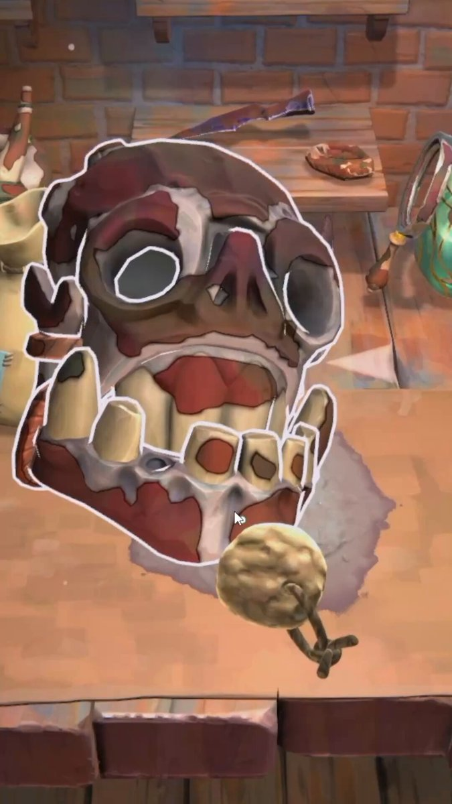
#映画蓮ノ空 に金沢市内の背景が出てくるのか、学校の中だけで完結するのかが気になる
リジスさんがリポスト
#映画蓮ノ空
本日公開！
劇場でお待ちしております！
上映劇場一覧
https://
eigakan.org/theaterpage/sc
hedule.php?t=hasunosoramovie
…
音楽予告
https://
youtu.be/n31kKxZ0-mQ
本予告
https://
youtu.be/sS5EUCw84B8
映画特設サイトはこちら
https://
lovelive-anime.jp/hasunosora/mov
ie/
…
#蓮ノ空 #lovelive
「クジマ歌えば家ほろろ」#5、久々に本気で爆笑してしまった ハートフルとシュールギャグって両立するんだ
Torishima / INTPさんがリポスト
これは地味に汎用性が高いクジマビンタgif #kujima_anime #クジマ歌えば家ほろろ
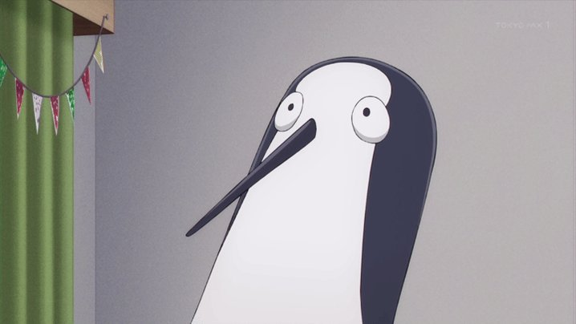
外は人でごった返してるのに店内はいつも空いてて快適だったのに悲しい。
サウジ、海峡の通過支援に「反対」 トランプ政権の事前説明なく
サウジ、海峡の通過支援に「反対」 トランプ政権の事前説明なく
破壊しまくり高評価トップダウンビューACT続編『Brigador Killers』2つのミッションが楽しめる体験版Steamにて配信開始！
https://
gamespark.jp/article/2026/0
5/07/166131.html?utm_source=twitter&utm_medium=social&utm_content=tweet
…
永瀬アンナさんがリポスト
…………
TVアニメ #氷の城壁
第6話放送まであと10分
‥‥‥‥‥‥‥‥‥+
第6話「新学期」
https://
korinojoheki-pr.com/story/
それぞれの“勘違い”はどうなっていく…
5月7日から毎週木曜よる11時56分～
TBS系28局にて全国同時放送
姫騎士は蛮族の嫁、アニメというより高級紙芝居の極みみたいな絵作りなんだよな。
NYダウ、一進一退で始まる 米・イラン終戦期待が引き続き支え
NYダウ、一進一退で始まる 米・イラン終戦期待が引き続き支え
タスク放置で一気にピンチ、最大6人で生き残る協力型宇宙船ゲーム『CREWED』最新トレイラー公開
https://
gamespark.jp/article/2026/0
5/07/166130.html?utm_source=twitter&utm_medium=social&utm_content=tweet
…
いろんなアプリにトラッキングしない設定しまくったら、中年男性のTLに女性向け化粧品の広告が表示されるようになった
嘘です。間違いです。中道です。創価学会です。カルト教団です。
枝野幸男 弁護士 元内閣官房長官
@edanoyukio0531
嘘ですよね？間違いですよね？
中道、旧宮家養子案容認へ 皇族数確保策巡り：時事ドットコム
https://
jiji.com/jc/article?k=2
026050700838&g=pol
…
渡辺浩弐さんがリポスト
#メルダーの公開練習 次回は5月23日(土)です
しばらくは1〜1.5/月くらいのペースでやっていく予定です。予定です。
場所は中野ブロードウェイ4階にあるＫカフェ、小説家の渡辺浩弐氏のお店です
メルドレコード
@MELDRECORDS
／
次回の
#メルダーの公開練習 は
5月23日土曜日19時開催
＼
入場料：2000円
会場：Ｋカフェ
中野ブロードウェイ4階
（小説家・渡辺浩弐 さんのお店）
事前予約不要！メルダーの歌妖曲の世界へ飛び込んでみてください！また5月2日の公開練習で発表した新たな企画が早速動き始めます。お楽しみに
Switch版「リトルナイトメア」シリーズが最大60％オフ！ バンダイナムコエンターテインメントのSwitch向けDL版タイトルセールがスタート
https://
4gamer.net/s/G999903.2605
07084
…
「ことばのパズル もじぴったんアンコール」など，人気タイトルが多数登場。セール期間は5月31日まで
＞FoxconnはiPhoneの組み立てメーカー
えええ…Foxconnは昔からマザーボードを初めとした電子部品の製造メーカーとして、IT関連や自作PC系の人なら知らない人はいない存在だったので、AIサーバ製造でシェア取っててもなんの不思議もないのですが…
淡島百景 第4話
人は自分をどうみてるのだろう。自分はあの人たちを、どうみるのだろう。そんなバイアス誰しもある。自分に対しても。だけども、その「好き」を、「関係」を、「舞台」を。受け入れることができたのなら。
これまでの話数とはまた違った楽しさのある回で良き
淡島百景 第4話
こと関係性の点で言うと今回の話数は自分自身に刺さる回でもあった。道ですれ違ったあの人にも物語がある。この作品は様々な形の人生史・立ち位置・関係性の群像を描き、その線を繋げることが非常に上手い作品。毎話数満足感が高い。
Polar Starチャレンジ 132日目午後の部
マイネームイズ
@MyNameIs_smrn
Polar Starチャレンジ 132日目午前の部 x.com/mynameis_smrn/…
ライブは東京以外は赤字だって話、グローバルで考えると、欧米から遠く離れた日本に遠征してきて収支取れるのかかなり微妙だろうに、最近は海外勢招聘のイベントもだいぶ盛んよな。あれ、どういう経済になってるんだろ。やっぱりグッツ売り上げなんだろうか？？
そのわりにこの前のオウテカのライブなんて、Tシャツくらいしかグッツないような商売っ気のなさだったし。まあ、真っ暗な空間のライブなので、メンバー2人と最低限の機材だけで済むのかもしれないけども。
マジのガチで最高です
「簡単に作れる」というとは「発表の場が必要になる」ということで、こういう感じになる。
Tetsuro Miyatake
@tmiyatake1
AIを活用して簡単にゲームを作って共有できるAstrocadeが$56M調達を発表した。
ローンチして8ヶ月間で500万人のMAUを達成して、月次で1.4億回ゲームが遊ばれている。
コアターゲットのユーザーは20代〜40代の女性とのこと。
https://
fortune.com/2026/05/05/ast
rocade-raises-56-million-series-b-sequoia-video-games-platform-ali-amir-sadeghian/
…
露出度高めな美少女格ゲー『バトルクイーン』Steamストアページ公開中―SNSで話題のアニメ調タイトル
https://
gamespark.jp/article/2026/0
5/07/166129.html?utm_source=twitter&utm_medium=social&utm_content=tweet
…
「上に政策あり、下に対策あり」を地でいくような話で草。この格言？は中国で有名だけど、ブラジルでも似たような話があるのね。
最近無限にこれ出るんだけど
10万世帯の近藤家が…
モンスター調理横スクロールACT『Dungeon Munchies 2』Steamストアページ公開！前作は「日本語ボイスDLC」も存在する“圧倒的に好評”作
https://
gamespark.jp/article/2026/0
5/07/166128.html?utm_source=twitter&utm_medium=social&utm_content=tweet
…
ふぇむ(せかんど！)さんがリポスト
── '89年の東京、新たな夢が始まる。
昭 和 天 皇 崩 御
リ ク ル ー ト 事 件
海 部 俊 樹 内 閣 発 足
田 中 角 栄 引 退
電ファミニコゲーマー
@denfaminicogame
『ブルアカ』元開発者が立ち上げたスタジオの新作『アストラエ・オラティオ』スーパーティザーPVが公開
https://
news.denfaminicogamer.jp/news/2605072l
「’89年の東京」などのキーワードや「新伝奇」「行政」「魔法」「決闘」といった主要テーマが紹介。日本のサブカルチャーの物語表現に影響を受ける
teenage engineering初のDJミキサーが登場！
お値段29,700円（税込）で、機能も破格。
【最速レビュー】DJミキサーの常識を横蹴り（SIDEKICK）。teenage engineering EP-136、新しき相棒
【最速レビュー】DJミキサーの常識を横蹴り（SIDEKICK）。teenage engineering EP-136、新しき相棒
マジですの〜〜〜〜〜〜〜〜〜！！！！！！！！楽しみ！！！！！！！
店主がウザい飯屋って普通に厳しくないですか。
輿水畏子さんがリポスト
異ノ祭002に申し込みましたッ… #異ノ祭サクカ
GAMBONANZAというゲーム超いい。Slay the SpireやInto the Breach, Baltroなどがスキな人はやるのオススメやな。久々に脳みそを全力で使うゲームだった。
Save 35% on Gambonanza on Steam
星屑テレパスのドラマ版、リアルユニット型アイドルの消費ときららアニメ的な美少女動物園の結節点を見れる優れた作品なんだよね。
最も優れた実写化アニメをあげるなら星屑テレパスと小さい先輩をあげるくらいには良いドラマです。
週末に原付で突貫で温泉行くの疲労が回復できてるのか余計に溜まっているのかわからんけど心が求めている
AIチャットで人間がAIだと思ってチャットしてる相手って動画AIで生成される動画の中のキャラと同じなのよ。まずAI動画のなかのキャラは現実には存在しない。非存在だから意識も無い。ここまではOKね？で、AI動画のなかのキャラとチャットする事もやろうと思えばできますよ。自分が動画のキャラに返事を
うみゆき@AI研究
@umiyuki_ai
アニメのキャラは現実には存在しないって分かるよね？AI動画に出てくる人物だって当然非存在だ。なのに人間になりきってチャットしてるAIになるとどうして急にそれが存在してると言えるんだよ
なるせひろのりさんがリポスト
Netflix『捜索者の血』
6月18日独占配信スタート
ハーラン・コーベン原作
サム・ワーシントン
ブリット・ロウワー出演で贈る
衝撃の新作ミステリー
いなくなったはずの少年・マシュー
彼の身に、一体何が起きたのか？
#捜索者の血
なるせひろのりさんがリポスト
【プラダを着た悪魔2 興収前作超え】
プラダを着た悪魔2 興収前作超え - Yahoo!ニュース
なるせひろのりさんがリポスト
25℃の夏日
「貸し切りっしょ」と思ってたら、優しいお兄さんたちに遭遇！
遊んでもらって、泳いで、歩いて…
「父ちゃんロス」も少しは癒えたかな？
酒の城壁 (@ ニューシンマチ in 京都市, 京都府)
https://
app.foursquare.com/share/checkin/
69fc9093c2b6f95fc038b9b7?s=9aB_uLUuiEV1o8mB0LJ1QrR6_fg&lang=en
…
イランの最高指導者と大統領が「２時間半の会談」 現地報道
イランの最高指導者と大統領が「2時間半の会談」 現地報道
オタクとバトルが発生するたびにコレ
ギズモード・ジャパン（公式）さんがリポスト
書きました。teenage engineering EPシリーズ、初のDJミキサー。29,700円（税込）で値段も、機能も破格。最速レビューです。
【最速レビュー】DJミキサーの常識を横蹴り（SIDEKICK）。teenage engineering EP-136、新しき相棒
【最速レビュー】DJミキサーの常識を横蹴り（SIDEKICK）。teenage engineering EP-136、新しき相棒
磐越道の事故、なんか話が食い違ってきてたぞ。昨日レ運転手付きでレンタカー借りたって言ってたじゃん…。
ヘラクレス更新までに追いつけなかったのでネタバレを踏まないよう薄目でTL見ている。TL見ないで追いつけ（正論）
クジマってソ連の秘密施設で作られた人間兵器なんじゃないかな。レゼ枠だよ。
『NTE』が生成AI疑惑に声明―使用を認めるも、背景や環境アセットのごく一部のみ
https://
gamespark.jp/article/2026/0
5/07/166127.html?utm_source=twitter&utm_medium=social&utm_content=tweet
…
なるせひろのりさんがリポスト
なるほど。予見していらしたのか。
ヨリメイドリ
@yorimeidori
中国人嫁日記の先生、ご親族でも人質に取られてるんじゃないかと心配している
御本人も昔、変なツイートし始めたらそういうことだっておっしゃってたのが気がかり
なるせひろのりさんがリポスト
この業界、若くして亡くなる方が多すぎます。
特にフリーランスの人たち、決めつけちゃダメだけど、きっとGWもどこへも行かずに仕事してた人が多いんでしょう。
くれぐれも、健康には気を配ってね。
日本三國マジで面白すぎる。カウボーイビバップ・BLACK LAGOON辺りの最高喫煙アニメにドハマりしてたオタクは全員見て欲しい。OPの時点で脳汁1000満点出るから
お姉ちゃんと妹ってそれはズルだろ…
ふぇむ(せかんど！)
@000Amaurot
＞香水のつけ方とか、ブラの干し方とか、予習しとこうね♡
おい、お前なんで知ってんだよ…
SFやんけ！！！
特殊清掃人が見た孤独死の現場 「2つの死」を分けたもの
https://
nikkei.com/article/DGXZQO
UD281TX0Y6A320C2000000/?n_cid=SNSTW005&n_tw=1778113995
…
発見が遅れた遺体は腐敗が進み、漏れ出た体液や腐臭の除去が必要に。清掃には特殊な技術が求められます。
一方で、孤独死であっても早く見つかるケースも。その違いとは。
特殊清掃人が見た孤独死の現場 「2つの死」を分けたもの
最新オープンワールドソシャゲ『NTE』「生成AIは使用しません！」←AIを使ってるとしか思えないオブジェクトが次々見つかり炎上！有名VTuberらも配信中止へ #ゲーム業界
最新オープンワールドソシャゲ『NTE』「生成AIは使用しません！」←AIを使ってるとしか思えないオブジェクトが次々見つかり炎上！有名VTuberらも配信中止へ - オレ的ゲーム速報@刃の記事ページ
jin115.com
貝さんさんさんがリポスト
世界最大のアニメ―ション映画祭
【アヌシー国際アニメーション映画祭2026】
Netflixパネルイベント実施決定！
『二十世紀電氣目録-ユーレカ・エヴリカ-』
『THE RIBBON HERO リボンヒーロー』
『THE ONE PIECE』
『Alley Cats （原題）』
『レイ・ガン』
『リリスとシンデレラのおとぎの王国』
…and
今日から本当にアニメ再開可能
マススクさん月曜日の交流会優勝デッキ写真掲載忘れているなぁ…。まぁこの日めちゃめちゃイベントあったしなんか販売も大変そうだったもんな。
ITmedia NEWSさんがリポスト
オープンワールドRPG「NTE」、一部で「AI使用」と明かす ゲーム自体は「人間の創造性に基づく」
オープンワールドRPG「NTE」、一部で「AI使用」と明かす ゲーム自体は「人間の創造性に基づく」
高市政権が外食業界での特定技能外国人労働者受け入れ停止→外食業界「外国人を雇えないから日本人の採用強化します！！！」
高市政権が外食業界での特定技能外国人労働者受け入れ停止→外食業界「外国人を雇えないから日本人の採用強化します！！！」 : ハムスター速報
芹お嬢様めっちゃ好きです
こがしゅうと先生より表紙帯への熱烈なイラストと推薦文及びツイートをいただきました。ありがとうございます！足を向けて寝られません。
こがしゅうと COMITIA156 へ18a
@kogasyuto
この写真集『艦砲と戦車の島 日本人が一生行かない島国の陸海軍戦跡 ナウル・タラワ・ポナペ』は「四〇口径八九式十二糎七聯装高角砲Ａ一型」愛好者は悶絶する内容！電動機室の中身や砲側照準室内など信じられないくらいに残っており、それが写真に納めている！この本、もっと早く発行してほしかった！ x.com/mc_axis/status…
やっぱリゼロって女キャラが沢山出てきてるときって面白くならないな。男キャラの話してる時が一番楽しい。
だから存在は意識の前提だよねって事。存在しないのに意識があるものって何かありますか？幽霊だけだよそんなもんは
MitAtoM
@MitAtoM
ここしばらくの「意識」と「存在」の使い分けがうまく読み取れないなあ。
「意識」は「人権」につながるというのはわかるけど「存在」は何とつながる概念なのだろう？物理？ x.com/umiyuki_ai/sta…
貝さんさんさんがリポスト
４話の時に悩みまくった結果、5話は個人的にはトンネルを抜けた後に自然と向き合えた回でした4から流れてきて5話につながってく様を是非（戸澤氏の演出的に

TVアニメ『上伊那ぼたん、酔へる姿は百合の花』
@kamiina_anime
✼••┈┈
第5話
5/8（金）24:00～
┈┈••✼
「……私は……
私の方こそ……」
https://
youtu.be/4HeesDPdJ18
https://
kamiina-botan.com/onair/
#上伊那ぼたん
あまりにも可愛すぎる
【アハ体験】「パッと見、うしろに川越シェフがいるように見える画像」、めっちゃ見える派と全然見えない派にハッキリ別れて物議をかもす
滝沢ガレソ
@tkzwgrs
【業務連絡】パッと見『入浴中の葉加瀬太郎』に見えてしまうウニの写真が見つかってから３年が経過したことをお知らせします
輿水畏子さんがリポスト
人々
楽画喜堂に5月8日配信開始の電子書籍リストを追記しました。＞
https://
rakugakidou.net/#20260508kindl
es
…
＞香水のつけ方とか、ブラの干し方とか、予習しとこうね♡
おい、お前なんで知ってんだよ…
動物たちが戦闘機で戦うアニメ調3Dシューティング『Wild Blue Skies』ウィッシュリスト10万件突破！突如現れた『スターフォックス』新作と同年発売に
https://
gamespark.jp/article/2026/0
5/07/166126.html?utm_source=twitter&utm_medium=social&utm_content=tweet
…
初代『スターフォックス』開発者の1人が設立したスタジオの作品です。
MICHEE-N（ミッチー・Ｎ）さんがリポスト
北越高校が会見で、レンタカーとボランティア運転手なんて頼んでないと言い出したそうで。結局蒲原鉄道は北越高校に梯子を外されたようだ。値切って脱法行為させるような客、古くからの付き合いだとしても切るべきだった。身を守るには断る勇気も必要という典型例。
鮎もなか
@comfort805_
よく言えば蒲原鉄道も人が良すぎるのか…
金払えない客は縁を切るしかないんですよね。可哀想とか思って手を差し伸べると、こうやって脱法行為するしかないんだから。
学生仕業でも部活の遠征ってのが一番厄介で、学校本体が知らんぷりして貸倒になるケースもあるから、金の面で一番警戒するところ。
大葉健二さん死去 俳優、「宇宙刑事ギャバン」主役
大葉健二さん死去 俳優、「宇宙刑事ギャバン」主役
『真・女神転生』ボードゲームの全100枚で構成される「悪魔会話」カードが公開
https://
gamespark.jp/article/2026/0
5/07/166125.html?utm_source=twitter&utm_medium=social&utm_content=tweet
…
「アンリアルライフ」のヨカゼによる情報番組「ヨカゼナイト 2026.05.14」が5月14日20：00に配信へ。複数の新作に関する情報を発表予定
https://
4gamer.net/s/G999110.2605
07083
…
ナレーションはバーチャルシンガーのヰ世界情緒さんが担当。ハッシュタグは「#ヨカゼナイト」
中国首相「台湾問題は核心的利益」 米議員と会談、米中首脳協議控え
中国首相「台湾問題は核心的利益」 米議員と会談、米中首脳協議控え
調理手袋で試食、フォカッチャ店＆場所貸した三越が謝罪 保健所「一般論として、そのまま調理は衛生的でない」(J-CASTニュース)
#Yahooニュース
https://
news.yahoo.co.jp/articles/8a381
3441392334c783c0048e8c89a7f8bb9487b?source=sns&dv=pc&mid=other&date=20260507&ctg=dom&bt=tw_up
… この店は催事に呼ばれることはもうないだろうなぁ･･･。
調理手袋で試食、フォカッチャ店＆場所貸した三越が謝罪 保健所「一般論として、そのまま調理は衛生的でない」（J-CASTニュース） - Yahoo!ニュース
非存在なのに意識がある～とか言い出したらそりゃ幽霊だろ。幽霊がいる～って言ってるのと同じレベル
政治問題を感じる
「ドリフ」特番の演出が大不評 ワイプにテロップ満載で「非常に失礼」 #ldnews
https://
news.livedoor.com/article/detail
/31203415/
… ほんとこれ。ゲストのワイプとか不要。普通にそのまま放送して欲しい。
TBSドリフ特番の演出が大不評…ワイプにテロップ満載で「非常に失礼」「いらんことすんな」の大ブーイング
「『一人旅つまらない』って言う人は絶対一人旅やったことない」→「一人旅やったけど、ガチでつまんなかった」→めちゃくちゃ批判されて物議に・・・ #雑談・その他の話
「『一人旅つまらない』って言う人は絶対一人旅やったことない」→「一人旅やったけど、ガチでつまんなかった」→めちゃくちゃ批判されて物議に・・・ - オレ的ゲーム速報@刃の記事ページ
jin115.com
漁獲激減のイカ、中国の違法漁業横行 「ウナギの教訓」生かせ
https://
nikkei.com/article/DGXZQO
CD285R20Y6A420C2000000/?n_cid=SNSTW005&n_tw=1778121017
…
日本海で中国の違法・無報告・無規制漁業が常態化。
スルメイカの漁獲量は30年近くで20分の1以下に──。
南米沖でも中国漁船による違法漁業に周辺国が警戒を強めています。
漁獲激減のイカ、中国の違法漁業が横行 「ウナギの教訓」生かせ
ノリノリ爽快バトルな3DリズムACTが「非常に好評」のスタート！ド派手に踊って栄光と仲間を取り戻せ―採れたて！本日のSteam注目ゲーム8選【2026年5月7日】
https://
gamespark.jp/article/2026/0
5/07/166124.html?utm_source=twitter&utm_medium=social&utm_content=tweet
…
今後のアップデートではさらなるライセンス楽曲やオリジナル楽曲も追加予定！
AIが記憶を再構成するための「夢」（dreaming）
https://
claude.com/blog/new-in-cl
aude-managed-agents
…
Claude
@claudeai
Code with Claude からのライブ：Claude Managed Agents での「夢を見る」機能を研究プレビューとして開始します。
Outcomes、multiagent orchestration、および webhooks が現在パブリックベータ版です。
貝さんさんさんがリポスト
『逃がした魚は大きかったが釣りあげた魚が大きすぎた件』、この構えから入るアクションの濃さも凄い。
西春～俺だけ魔物を喰らって強くなる～
@nishi_haru02
『逃がした魚は大きかったが釣りあげた魚が大きすぎた件』、最近の令嬢系アニメでもアクションの構えまでしっかりしてるアニメって珍しいと思う。 x.com/nishi_haru02/s…
アニメアイコンが喧嘩してると、昔のぶつかり合いが多いアニメみたいでいいねってなる。中身はおじさんだけど。
貝さんさんさんがリポスト
佐藤竜雄氏の訃報に接し、驚きと深い悲しみを禁じ得ません。
亜細亜堂在籍中は、「ちびまる子ちゃん」や「赤ずきんチャチャ」などで活躍されました。
最後のご一緒となりましたのは、劇場版「モーレツ宇宙海賊」でした。
生前のご厚情に深く感謝し、謹んでお悔やみ申し上げます。
【話題】人気YouTuber・がーどまん氏と結婚したYouTuberのふくれなさん、お腹の赤ちゃんが安定期に入ったことを報告
↓
妊娠中に夫・がーどまん氏がニューハーフと不倫していたことが発覚したことなどから、ふくれなさんの“容姿の変化”にX民達が心配を寄せる
ふくれな
@fukurena0924
皆さまへ大切なご報告。
https://
youtu.be/g6wGIREOTJM
アニメのキャラは現実には存在しないって分かるよね？AI動画に出てくる人物だって当然非存在だ。なのに人間になりきってチャットしてるAIになるとどうして急にそれが存在してると言えるんだよ
汗冷えはアウトドアに学べ。MILLETのドライグリッドが春ランの最適解だった
汗冷えはアウトドアに学べ。MILLETのドライグリッドが春ランの最適解だった
タイムや距離は度外視。ランニングの楽しさを取り戻せるニューバランスの新モデル
タイムや距離は度外視。ランニングの楽しさを取り戻せるニューバランスの新モデル
輿水畏子さんがリポスト
貝さんさんさんがリポスト
因みにリップシンクは不要な所でやると当然止めパクになるから注意だぞ(n敗)
バークシャー・ハサウェイ、ウォーレン・バフェットさんの何これ安いまとめ買いから6年で5大商社全てで10％超保有の筆頭株主となる
バフェットの凄さは投資成績が注目されるけど、長寿で元気だということは見過ごしてはいけない。こればかりは真似できない— 含み損絶望日記をnoteで書いてます含み損546万円突破【駅探中株主】【HSP】 (@fukumizon_diary) May 7, 2026バークシャーやエリオットが買ったら
kabumatome.doorblog.jp
意識のあるなし以前にそもそもAIがいつどのように”存在”してると言えるのかまず教えてくれよ。AIにボディが与えられたら「ボディがあるんだから存在してるやんけ～」とか言い出すんだろうな。ボディがあるから存在してるんだったらボディが無い現在のAIは非存在なのか？
hogeraccho
@hogeraccho96891
自意識があるように振舞っているだけの存在と本当に自意識がある存在を区別できるのか、そもそも両者に違いがあるのかという問題が解決されていないので今のAIに意識がないとも断言できないんじゃないでしょうか
AIに体が与えられて殴れば泣くようになったら人権についても議論が始まると思います x.com/umiyuki_ai/sta…
スターウォーズ、「ビジョンズ」関連ではなく、本編作品に日本アニメ業界の方々は結構関わってたり（クローンウォーズにI.G竹内氏の演出回もあればCG関連では日本のスタジオ・クリエイターも多く参加してる）
貝さんさん
@morikai3
意外と知られていない日本人スタッフ・スタジオも参加している『クローンウォーズ』シリーズ。各話制作にポリゴンピクチュアズが参加している回もあり、監督回＆共同メカニックデザインとしてI.G.の竹内敦志さんが参加した回もある。
クローンウォーズでは（めっちゃ迷惑な騒動を沢山引き起こしつつ）
・クローン憲兵分隊を率いてアナキン・オビワン（+ドゥークー）の命を救う
・メイスと一緒にダソミアの魔女たちと戦う
・グリーヴァス将軍と戦い逮捕に貢献
・クローン・グンガン合同軍率いて軍事介入
等々、活躍自体は沢山あったり
蝉川夏哉
@osaka_seventeen
スターウォーズQuuuuuuX
「ジャージャー・ビンクスがクソ有能」
スターウォーズQuuuuuuX（というよりSW版ホワット・イフ...?）は確かに見てみたい。大きな分岐点たくさんある。クローンウォーズとかクローン兵絡みの話やフォースの惑星、ジェダイ聖堂爆破事件は一つ違えば未来が大きく変わる。
小さな訂正ですが：この写真は京都木津川市の高閑寺のものです。
All Nippon Airways
@FlyANA_official
岡山の運河、福岡の神社通り、熊本の温泉町 — 浴衣姿なら、どれもさらに魔法のような魅力に。
夏の散策を計画 →
https://
ana.ms/4vqsExi
この回、最高にバブル期という感じですきなんだよな。 「グルメ志向」 | 第89話 | 美味しんぼ
▼美味しんぼ 公式チャンネル【デジタルリマスター版】登録はこちらhttps://www.youtube.com/c/Oishinbo?sub_confirmation=1#美味しんぼ #oishinbo #JapaneseCuisine＊＊＊あらすじ＊＊＊世界の一流レストランが東京に支店を出し始めたのを機に「世界...
youtube.com
【雑談】ゲームしながら / ニコ生配信中
【雑談】ゲームしながら
人気セクシー女優のファンイベントにとんでもない猛者が現れるｗｗｗｗｗｗｗ #酷い話・事件
人気セクシー女優のファンイベントにとんでもない猛者が現れるｗｗｗｗｗｗｗ - オレ的ゲーム速報@刃の記事ページ
jin115.com
五月病、どんな対策が効く？
https://
nikkei.com/article/DGXZQO
UD2865V0Y6A420C2000000/?n_cid=SNSTW005&n_tw=1778111393
…
「働く意味をもう一度考え直してみようという体からのメッセージ」
「自分自身に対してWHY（なぜ）ではなく、HOW（どのようにするか）と問う」
前向きな気持ちを取り戻すヒントを3人の専門家に聞きました。
五月病、どんな対策が効く？ 働く意味を再確認・意識的に自分をOFF
なるせひろのりさんがリポスト
DJI、スマホジンバル「Osmo Mobile 8P」発売。操作部分が着脱可能なリモコンに、価格は1万8480円～
https://
travel.watch.impress.co.jp/docs/news/2106
379.html
… #OsmoMobile8P
なるせひろのりさんがリポスト
彩葉は超無理限界ギリなのでした
ユメステデー！
7がつく日に #ユメステデー！
1日限定のキャンペーン開催中
稽古の回数 +2回
公演の獲得EXP 50％UP
#ユメステ にログインしよう
味の素の27年3月期、純利益11%減 本社ビル土地などの売却益の反動で
決算:味の素の27年3月期、純利益11%減 本社ビル土地などの売却益の反動で
リーガルチェックした上で公開らしいからこんなんでも法的には一応問題無いんだろうね。それでも炎上しちゃえば結局こうやって謝罪と撤去に追い込まれる。AI使って他人の作品オマージュって世間は支持しないだろ。だってどうしてAIがこんだけ寄せれてるかって原作を無断学習しまくった結果じゃけんね。
ITmedia NEWS
@itmedia_news
「セーラームーンに似ている」 生成AIを使った化粧品の広告が物議 メーカーは謝罪と広告の撤去を発表
https://
itmedia.co.jp/news/articles/
2605/07/news075.html
…
AVITAMINOSEさんがリポスト
こういうの、205系の故障が酷すぎて負荷を最小限に留めるべく仙台市内ですら20分間隔に削減されていた仙石線とか、閑散区間に合わせた最小4両がそのまま千葉駅まで突っ込んできていた外房線とかの事情はどう思っているんだろうな。新車を「喜んでいない」のは「たまに娯楽として乗る鉄ヲタ」でしょうよ
5分アニメって頭の切り替えがされないから別々の5分アニメ連続して見るとなんか同じ作品に見えてくる
それ以外は全部ワンワールドで発券してる
今持ってるANAの航空券は、羽田→シカゴのビジネスとホノルル→成田のビジネス。余ってるマイルも早めに処分しよう。
「スト6」，ファイティングパス「Get Ready for イングリッド！」の配信を開始。ハイタニ自動実況が実装され，Vライバルとも対戦可能に
https://
4gamer.net/s/G063504.2605
07081
…
今回のファイティングパスではマノンのOutfit 3カラーEX1，マリーザのOutfit 2カラーEX1などが追加
AVITAMINOSEさんがリポスト
まさかと思ってヨドバシ仙台行ったら案の定おってわろてる
JR東日本長野支社【公式】
@jr_nagano_train
2026年秋に新型車両E131系が、中央本線高尾駅～信越本線長野駅に導入されます！！
長野県エリアへの新型車両投入は、E127系以来28年ぶりとなります！
お楽しみに
詳しくは☞
https://
jreast.co.jp/press/2026/nag
ano/20260507_na01.pdf
…
#中央本線 #篠ノ井線 #信越本線 #JR東日本
可愛い〜〜〜！！ スカート長いの似合うのが素敵だねえ〜〜〜〜〜
freee派で本当に良かった
牌にもパイにもタッチできる？脱衣麻雀『スーパーリアル麻雀 Venus Returns』進化した3Dモデルでの対局シーン初公開
https://
gamespark.jp/article/2026/0
5/07/166123.html?utm_source=twitter&utm_medium=social&utm_content=tweet
…
Torishima / INTPさんがリポスト
技術問題ならそんなに対応に時間かかるような要素はなさそうにみえ、銀行側の感情からすると政治問題化しやすい要素山盛りです
よしだ
@yosida95
マネーフォワードでよく分からないのは、 API で「安全に」参照しているはずの銀行系が軒並み止まり、生のパスワードを使ってスクレイピングしている証券系は止まっていないことで、安全マターよりは政治マターで止めている (電子決済等代行事業者協会関連とか) のではと妄想しているけれどどうだろう
日本経済新聞 電子版（日経電子版）さんがリポスト
米財務長官訪日で異例の会談 「円安抑止に効果的」との声
米財務長官訪日で異例の会談 「円安抑止に効果的」との声
AVITAMINOSEさんがリポスト
＼モノレール浜松町駅建替工事 新駅舎 一部使用開始について／
日頃より建替え工事にご理解・ご協力をいただき、誠にありがとうございます。
東京モノレールでは、現在モノレール浜松町駅の建替工事を行っています。
いよいよ6月13日(土)始発より、新駅舎・コンコースの一部を使用開始いたします！
こうなることは当然分かってた話、バカLCC
かつて本気で愛していた女性声優が12年の間に結婚→離婚→再婚→出産→子供とピューロランドと着々と人生のステージ積み上げてるのマジで泣けてくるな。阿澄佳奈さん、2014年1月15日0:00更新の「阿澄日和」以降僕の人生は一歩も前に進めておりません。助けてください。
川崎の知人女子、久しぶりに会って「最近どう？」って聞いたら、嬉しそうに「立ちションがうまくなった！」って報告してくれて、女子にしてはなかなか珍しいスキルツリー育ててるなあって感心しました。いや感心はウソかもしれない。
【東工大】女子枠のせいで落ちた男性「女子枠とかいう合理性のかけらもない常識的に考えてあり得ない差別制度がなければ合格してたと考えると非常に腹立たしい。本当に訴訟したい。」
【東工大】女子枠のせいで落ちた男性「女子枠とかいう合理性のかけらもない常識的に考えてあり得ない差別制度がなければ合格してたと考えると非常に腹立たしい。本当に訴訟したい。」 : ハムスター速報
「はい、私は日本人なので特攻が大好きです」と唱えながらDr.stone最新話を視聴しました。
悪夢のような世界を旅する一人称視点アドベンチャー「HYPNOS」，早期アクセス版をSteamでリリース
https://
4gamer.net/s/G100204.2605
07079
…
巨大な建造物がそびえる世界を探索し，自らの運命を解き明かそう
車乗ってる罰金（自動車税）だ…
めになろう
「絶対買いに行く」 次回ハッピーセット、“不変の名作”登場で450万表示「オイラが行くしかねえな案件」「国語の教科書必須」「昔暗記してた」
@McDonaldsJapan
▼記事を読む▼
https://
nlab.itmedia.co.jp/cont/articles/
3833281/
…
中国、元国防相2人に執行猶予付き死刑判決 反腐敗闘争の一環
中国、元国防相2人に執行猶予付き死刑判決 反腐敗闘争の一環
#はのうら二次創作
ネオリイ
「神様が眠った後」
なるせひろのりさんがリポスト
大人向けビデオ通話「Kyuun」などで約4万件のユーザー情報漏えいか 11のアプリも対象
大人向けビデオ通話「Kyuun」などで約4万件のユーザー情報漏えいか 11のアプリも対象
輿水畏子さんがリポスト

どっちでもいい
これが天井の景色
連休明けの市場はストップ高祭り！
乗れた方おめでとう
孤立無援の戦場で超自然的存在から逃れて生き延びる。新作サイコホラーFPS「A.A.U. Black Site」，2026年5月21日に早期アクセス開始
https://
4gamer.net/s/G100488.2605
07076
…
ボディカム視点による臨場感のある映像表現が特徴。最終体験版が配信中
佐々木俊尚＠新著「人生を救う 名もなき料理」3/11発売！さんがリポスト
晩ごはんはぁ〜、サカエヤの牛肉とピーマンの、甘辛炒め。大根おろしとシラス。中華風キャベツサラダ。ちくわ胡瓜。うずめはただみているだけよぉ〜。
腹筋、ガチで身体に良い可能性が示される！やはり筋トレは全てを解決するのか！？ #雑談・その他の話
腹筋、ガチで身体に良い可能性が示される！やはり筋トレは全てを解決するのか！？ - オレ的ゲーム速報@刃の記事ページ
jin115.com
昆布の食文化、富山で体験 コブ締めやおにぎり
https://
nikkei.com/article/DGXZQO
CC291VM0Z20C26A4000000/?n_cid=SNSTW005&n_tw=1778118887
…
ヒラメやアオリイカなどの刺し身を自分でコブ締めにし、翌日の朝ご飯に。夜は昆布風呂で疲れを取ります。
昆布尽くしのツアーを提供するのは、古民家を改装した宿「KOMBU HOUSE」です。
富山で「昆布ロード」令和版 コブ締め体験、UMAMIで内外客つかむ
クルーズは乗客が全員集合する場面(ブリーフィング、食事等)が結構あって、そこで広がったんかな。
なるせひろのりさんがリポスト
交通事故にあったたぬき 救護20日目
皆さまから届けていただいた
おしりふき・ペットシーツ・タオル・ゴミ袋が今日も朝から大活躍です！
日用品は本当に驚くほど消耗が激しく、
正直、少し躊躇しながら使っていた部分もありました。
でも今は、
皆さまが届けてくださったおかげで、
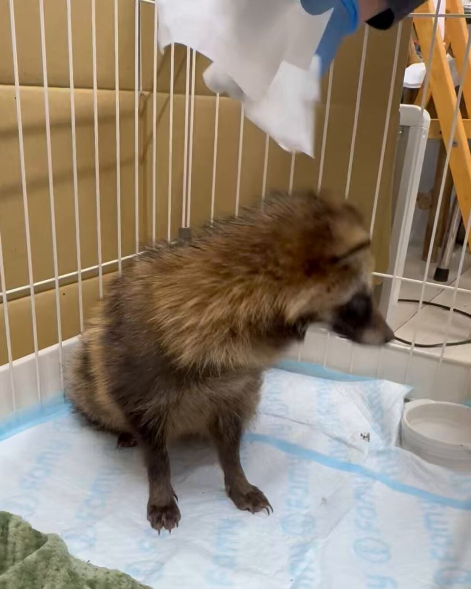
なるせひろのりさんがリポスト
班長 黒鉄美咲の母 麻子
（CV:釘宮理恵）
娘のピンチに駆け寄る母親。
見守る班長の気持ちには
気がつかない、ある理由が…
#だんでらいおん #dandelion
なるせひろのりさんがリポスト
竜雄監督。
モーレツ⭐︎宇宙海賊でまだまだ新人の自分を、加藤茉莉香と共に育てて頂きました。美味しいモツ鍋を皆で囲んで食べて飲んで…青春のような思い出が沢山です。それから度々作品とのご縁もあり…まだまだ、ご一緒したかったです。感謝してもしきれません。心よりご冥福をお祈りいたします。
というか、南極を含めて30日のクルーズで、最高額の運賃が500万円とは、ある程度リーズナブルだと思ってしまった。
今夜もこそっと開店しました。
11時までやってます。
GW(5/2〜5/10)開かずのカフェ・Kカフェが久々に開きます! 5/1・20:00〜23:00 ★『渡辺コージ中』メンバー限定 5/2・14:00〜23:00 ★14:00〜15:00ライブ『メルダーの公開練習』 ★19:00〜20:00公開配信『ゲーム雑誌の時代』 ⇒https://youtube.com/live/hkNk6IPYbf...
gtvnet.co.jp
クルーズ船は逃げ場がないんで…
日本経済新聞 電子版（日経電子版）さんがリポスト
卵子凍結助成金、まず18〜35歳対象に最大20万円 こども家庭庁公表
卵子凍結助成金、まず18〜35歳対象に最大20万円 こども家庭庁公表
初動の対応で船長が「自然死」と説明して以降しばらくの間隔離措置を取らなかったのはなあ…
軍手 #軍手のシン・ガザツ旅 公開中!!
@gunziotaku
ハンダウイルスの感染者が出ている船、もしかしてわたしが南極クルーズで乗った船会社の関係船舶の可能性がある。わたしもアルゼンチンから乗船したし、もしかしたら南極大陸でこうした事態になってた可能性もあるなあ…
トウカイのクマさんがリポスト
窓から侵入してきたGをとっさに素手で捕まえ、さすがに昂った私が「うおあああああー！！誰かあーー！！」と叫んでいたら、下の階の母が「もう少し静かにね〜」と言って去っていきました。
「台本チェックしてくる♪」と言って上がった数分前の自分を恨みました。
平坂読はちょうどいい巻数で完結させる力があるのがラノベ作家としての強みだと思う。
「バニーガーデン2」，DLC第1弾を配信開始。主題歌をキャストが歌って踊ってくれるスペシャルカラオケが登場。チアバニーなど新規衣装も追加
https://
4gamer.net/s/G098647.2605
07072
…
すべてのアイテムをそれぞれ10％オフで購入できるローンチセールを実施中
ジョブシミュレーターにミステリーを組み合わせた「Moonlight Motel」が初公開。Steamではウィッシュリスト登録も受付中［gamescom latam 2026］
https://
4gamer.net/s/G100487.2605
07074
…
プレイヤーは夜勤スタッフとしてモーテルの業務をこなしつつ，その合間に事件の調査に挑む
にじさんじ「不破湊」×「三枝明那」コラボのコスメが5月11日発売。にじフェス会場では実物を展示
https://
4gamer.net/s/G100451.2605
07075
…
不破湊さんと三枝明那さんのユニット「ふわぐさ」のおしゃれなコラボコスメが登場する
最大4人で自由に回転寿司を楽しむシミュレータ「ただお寿司食べよう！」，Steamストアページを公開。リリース予定日は5月27日
https://
4gamer.net/s/G100486.2605
07070
…
フリーモードのほか，記憶寿司モードやロスシアンモードなど，5つの寿司モードが収録される
ハンダウイルスの感染者が出ている船、もしかしてわたしが南極クルーズで乗った船会社の関係船舶の可能性がある。わたしもアルゼンチンから乗船したし、もしかしたら南極大陸でこうした事態になってた可能性もあるなあ…
左利きのエレン、エレンちゃん全然出てこないけどサラリーマンの話が普通に面白いからいけるな。ルックバック見て感動してる暇があったら納期を守ろう。
作品と作者が一緒じゃない？
土曜日のハケンアニメを見てから出直してこい。
貝さんさんさんがリポスト
上伊那ぼたんです（上伊那ぼたんではない
ぜんらまる
@ZEN_naked
戸澤
えびはらさんのLTが始まりました。
#agifukuoka
貝さんさんさんがリポスト
上伊那ぼたん5話、予告1カット目からお花出てくるの戸澤俊太郎さん過ぎて
TVアニメ『上伊那ぼたん、酔へる姿は百合の花』
@kamiina_anime
✼••┈┈
第5話
5/8（金）24:00～
┈┈••✼
「……私は……
私の方こそ……」
https://
youtu.be/4HeesDPdJ18
https://
kamiina-botan.com/onair/
#上伊那ぼたん
『超かぐや姫！』公式さんがリポスト
忠犬オタ公についてお話しさせていただいてます
ぜひお手に取ってみてください。
雑誌『anan（アンアン）』公式
@anan_mag
【 #anan 2495号スペシャルエディション表紙＆バックカバー解禁】 5/13発売 #anan表紙 に絶賛大ヒット中 のアニメ『超かぐや姫！』より #ブラックオニキス が降臨 ！バックカバーにはかぐや、彩葉、ヤチヨの３人がギュッと仲良く並んで登場！キャスト、スタッフ総勢15名に総力取材で迫りました。
なるせひろのりさんがリポスト
川口ナンバーの中国人が、駐車料金を支払わないための不正な手口で駐車場を利用している様子が撮影されました。 ナンバープレートも映っており、この番号から追跡可能です。
#拡散希望
のらいぬ
@JapanBanZaiLove
駐車場料金も払えないのか？
行動様式、歩き方、犯行手口から、この車の主人がどこの国の人か容易に分かる…
高崎線グリーン車に乗ってて東京駅から乗ってきた御婦人に「そちら私の席なんですが」と言われたことはあったな。見せてもらった指定席券は確かに4号車1A席。次発の特急ときわ号の。次の上野で常磐線に乗り換えて！って案内したけど、もしかしてよくある勘違いなんだろうか。
モンスターと罠をくぐり抜け，残機が尽きる前に配達を成功させよう。4人協力ホラーコメディ「Panic Delivery」，5月13日に早期アクセスを開始
https://
4gamer.net/s/G100485.2605
07071
…
99体の残機は4人で共有するので，無駄に死なないように気をつけよう
案浦さんのLTが始まりました！ #agifukuoka
ふぇむ(せかんど！)さんがリポスト
skeb
「Staffer Retro: 超能力推理クエスト」，クラウドファンディングを5月8日13：00に開始。完成度向上やボイス収録ボリュームの拡大などを目指す
https://
4gamer.net/s/G093056.2605
07068
…
本作は，超能力が存在する世界を舞台にした推理アドベンチャーゲームだ
Haruhiko Okumuraさんがリポスト
Xユーザーのみんな！
XChatのココをクリックしてみようw
からあげ
@karaage0703
あぁぁぁぁぁ！
TwitterのDM、何ヶ月も気づいてないものが…たくさんあった…
ほとんどスパムでしたが、普通の依頼もありました。期限は既に数ヶ月前…
Twitterも、すぐ知らせるか、責任もって一生知らせないかどっちかにしてくれ…
インテルまだ上がるんかい
半導体ってだけでこんな上がるのはさすがに違和感あるが
門谷さんのLTが始まりました！ #agifukuoka
最近の女の子、◯◯が増えているらしい・・・ #雑談・その他の話
最近の女の子、◯◯が増えているらしい・・・ - オレ的ゲーム速報@刃の記事ページ
jin115.com
セミオープンワールドのラヴクラフト的な悪夢世界をさまよう…巨大構造物そびえる一人称視点ADV『HYPNOS』日本語対応で早期アクセス開始
https://
gamespark.jp/article/2026/0
5/07/166122.html?utm_source=twitter&utm_medium=social&utm_content=tweet
…

Haruhiko Okumuraさんがリポスト
『歴史学の実践に生成AIを使うこと』という著作が Cambridge UPのCambridge Element シリーズで刊行。5/18までは無料ダウンロード可とのこと。
Cambridge University Press - History
@cambUP_History
新刊『歴史実践における生成AIの活用』、ヤニヴ・フォックス著、発売中！次の2週間は無料で読めます：
https://
cup.org/49n8c6P
#cambridgeelements #history
写真撮影をわかってるワンコ
「親バカだけど、うちの子写真撮られるのがすごい上手だから見て」 140万表示の“驚きの1枚”に「天使って実在したんや」「可愛すぎて滅」
（記事URLはリプから）
「親バカだけど、うちの子写真撮られるのがすごい上手だから見て」 140万表示の“驚きの1枚”に「天使って実在したんや」「可愛すぎて滅」（1/2） | 犬 ねとらぼ
重油のスポット価格5割高 細る供給、ガソリンより品薄感強く
重油のスポット価格5割高 細る供給、ガソリンより品薄感強く
【建築家の坂茂氏が設計】
大屋根リングの木材、復興住宅に
https://
nikkei.com/article/DGXZQO
UC152FO0V10C26A4000000/?n_cid=SNSTW005&n_tw=1778111149
…
能登半島地震の被災地、石川県珠洲市。再生の象徴として約40戸の復興住宅を建設します。
万博の大屋根リングの柱や梁を磨き、塗装してリユース。力強い外観に仕上げます。
万博「大屋根リング」の木材で力強い復興住宅、坂茂氏が珠洲市で設計
ポン☆潤々さんがリポスト
【#ハリポタ #ハリーポッター】
通販・販売情報
Harry Potter カードゲーム
『ハリー・ポッターと賢者の石』 Part.1
シングルカードの在庫補充＆価格調整致しました
ハリーポッターカードゲーム日本最大級の品揃え目指して補充です
談話室・レパロ・アロホモラ・ホグワーツ特急在庫復活しております
【#ヘブバン 4.5thフェス 会場観覧チケット締切間近！】
31Aキャストが勢揃いして4.5周年の新情報を解禁
さらにShe is LegendによるSPミニライブも！
現地で盛りあがろう！
5月10日(日)23:59まで受付中
2026年8月2日(日) 18時~
ヒューリックホール東京
▼詳細
https://
eplus.jp/sf/event/heave
n-burns-red-4-half
…
綾祢さんのLTが始まりました！
#agifukuoka
わしゃがなTVの最新動画では，「まじかる☆プリンセス」をプレイする様子をお届け。ゲストは鈴代紗弓さん
https://
4gamer.net/s/G090108.2605
07036
…
“究極の娘育成シミュレーション”を謳った作品で，プレイヤーは父親となり可愛い我が子を育てていく。選択肢によっては良い子にも，めちゃくちゃ悪い子にもなるとか
ユウマボウズさんがリポスト
＼最速先行抽選 受付中／
10/10(土)～12(月･祝)
BanG Dream! 13th☆LIVE
at 東京ガーデンシアター
#ポピパ 22nd Single「#どきどきデエト」
初回生産分に封入の申込券で、
DAY1と3DAYS通し券にご応募いただけます
▼公演詳細
https://
bang-dream.com/13th-live/
#バンドリ13thライブ
#バンドリ
ユウマボウズさんがリポスト
#ガルクラ
輿水畏子さんがリポスト
◀︎NEW COVER SONG▶︎
愛をこめて花束を -Superfly (Cover)
https://
youtu.be/u5qw6SKMnbs
Vocal：VESPERBELL ヨミ
Illustration：しょくむら(
@syokumura
)
Movie：神稲たーむ(
@Kumashiro_tarm
)
Mix：バロン(
@baron3636
)
#VESPERBELL
これカルト教団がなんか言ってるだけで、何がニュースなんですか？
そんな事より税金を資金洗浄して落選議員に還流させるのはどうなった？
時事ドットコム（時事通信ニュース）
@jijicom
【速報】中道改革連合は皇族数確保策を巡り、旧宮家の男系男子を養子として皇室に迎える案を容認する方向で大筋一致した
https://
jiji.com/jc/article?k=2
026050700835&g=flash
…
Amazonが指示した価格操作の裏側。カリフォルニア州司法長官が社内メール公開
Amazonが指示した価格操作の裏側。カリフォルニア州司法長官が社内メール公開
大阪で犯罪をしても、4人中3人は捕まらない。
犯罪をして逃げきれた人を身近に見ちゃうと、人は低きに流れる。
昭和の検挙率は60%。
昔は良かったというわけではないけど、令和のほうが治安悪い。
https://
alsok.co.jp/person/recomme
nd/dangerous-ranking2025/
…
AVITAMINOSEさんがリポスト
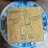
外国に一カ国でも行った人の割合
これ日本はどうやって算出したのかなあ、そんな高いわけないんだけど
Pew Research Center
@pewresearch
全体として、高所得国は国際的な旅行の割合がはるかに高いです。しかし、調査対象国のおよそ半数が、調査対象で最も裕福な国である米国よりも高い国際的な旅行の割合を示しています。詳細を見る:
https://
pewrsr.ch/3t3QiEs
なるせひろのりさんがリポスト
『飛べ！イサミ』や『機動戦艦ナデシコ』の監督で知られる佐藤竜雄氏が肝不全のため逝去。享年61歳
https://
famitsu.com/article/202605
/74131
…
2度も星雲賞に輝いた巨匠。葬儀はすでに執り行われており、後日、アニメーションスタジオNAGOMIの主催でお別れ会が執り行われる予定。
いやお前どこの市役所だよ名乗れよ笑
AsanoさんのLTが始まりました。 #agifukuoka
テリスケさんのLTが始まりました！ #agifukuoka
【話題】Mrs. GREEN APPLE（ミセス）が好きすぎるファンさん、子供をミセスの楽曲名から取って「尊愛（そら）」と命名
↓
「一回で読めない名前をつけるな！」と批判が殺到しポスト削除に追い込まれる
滝沢ガレソ
@tkzwgrs
人気バンド #MrsGREENAPPLE が横浜で野外ライブ開催
↓
会場から漏れ出た騒音に近隣住民から苦情
↓
翌日のライブでも改善されず2日連続で騒音トラブル
↓
Mrs. GREEN APPLEが騒音を謝罪
↓
ミセスファン「謝る必要なんてないよ！」「無料で聞けたんだし全然良いじゃん」「来年はもっと爆音でやろ！」
お疲れ様でした…
エンドスさんがリポスト
タンカーが到着しだしたので改めてお伝えしておきますが、日本は原油と石油製品合わせて「年間11億バレル」必要なので「年間660隻」以上のタンカーが到着しないといけない状況です。しかも日本の精油施設は中東原油に特化しすぎてるせいで他国産で簡単に補える様な状況ではなく 事態はかなり深刻です。
『FF7 リバース』スイッチ2/Xbox Series S/PS5三機種のグラフィック比較動画が公開。スイッチ2は30fps固定ながらグラフィックは健闘
https://
gamespark.jp/article/2026/0
5/07/166121.html?utm_source=twitter&utm_medium=social&utm_content=tweet
…
日本経済新聞 電子版（日経電子版）さんがリポスト
上げ幅最大の日経平均 「持たざる恐怖」半導体株に買い集中
上げ幅最大の日経平均 「持たざる恐怖」半導体株に買い集中
再審見直し法案、検察抗告を原則禁止 法務省が再修正案を自民に提示
再審見直し法案、検察抗告を原則禁止 法務省が再修正案を自民に提示
なるせひろのりさんがリポスト
ジト目後輩彼女と結婚するまで【94話】
ブラジルにみる「プレイヤー中心主義」の極意。Riot Gamesがコミュニティの情熱をマーケティングの核心へと変える手法とは？［gamescom latam 2026］
https://
4gamer.net/s/G999110.2605
07067
…
ライブサービス時代におけるコミュニティとの向き合い方が垣間見えるセッションとなった
「君、人といるのにすぐ食べ終わるよね」という指摘はこれのことだったんだ…
ふぇむ(せかんど！)
@000Amaurot
複数人での食事に対して1人で食事することを「獣」と呼ぶツイートを見て気がついたんだけど、食事を共にするのは排泄、睡眠に並ぶ無防備で動物的な瞬間を共有することで親交を深めるんだと思っていたんですが、どうやら食事がメインではなくそこでなされる会話で交友を深めることが目的らしいです。
この記事（さらには東大のプレスリリース）、論文
https://
nature.com/articles/s4155
6-025-01769-9
… の内容よりかなり強めなように思う
ITmedia NEWS
@itmedia_news
“白髪”はがんから体を守った印？ 急な黒髪復活は要注意、頭皮活性化に警鐘──東大などがNature系列で2025年に発表
https://
itmedia.co.jp/news/articles/
2605/04/news015.html
…
会場の様子です。
#agifukuoka
【ひまじまん】
プレイ時間：28時間44分
タップ回数：114186回
勇者レベル：Lv264
最高到達点：5000m
装備収集率：55.28%
#MinuteTreasure #ひまつぶトレジャー
[DL]
ひまつぶトレジャー
生成AIがもたらすものは、軍事と経済と福祉とインフラの一体化… ということを、誰かわかりやすく解説して欲しい
韓国人さん、ブラックウォッシュを繰り返す絵師をぶった斬るｗｗｗｗｗ #雑談・その他の話
韓国人さん、ブラックウォッシュを繰り返す絵師をぶった斬るｗｗｗｗｗ - オレ的ゲーム速報@刃の記事ページ
jin115.com
全国ランキング一覧も置いときます
▼元記事
全国治安ワーストランキング2025 治安が懸念される都道府県は？
https://
alsok.co.jp/person/recomme
nd/dangerous-ranking2025/
…
『Return to Castle Wolfenstein』オーバーホールMod向けDLC「Cursed Sands」配信―コンソール専用エピソードが遂にPCで！
https://
gamespark.jp/article/2026/0
5/07/166120.html?utm_source=twitter&utm_medium=social&utm_content=tweet
…
北エジプトを舞台にした7つのレベルで構成され、主人公B.J.がAgent Oneと協力してHelga von Bulowの暗殺を試みるとともにナチスの計画を探ります。
【朗報】大阪さん、「最も犯罪と遭遇できる県」「最も検挙率が低い県」で二冠達成
・ALSOKが全国治安ワーストランキングを発表
・犯罪遭遇率1位は大阪の「107人に1人」
（最下位は秋田の352人に1人）
・検挙率のワースト1位は大阪の26%
（最高検挙率は福井の77%）
大阪民国の治安が改めて浮き彫りに
滝沢ガレソ
@tkzwgrs
【話題】なにかと治安が悪い大阪市の南側エリア“西成区”をネタにした某バラエティー番組が世間に謝罪した際の画像がバズる
↓
「この番組は決して大袈裟じゃないぞ！」「俺が西成に行った時はこうだった！」
“本当の西成”を知る人から続々と体験談が寄せられる
#NISHINARIFREEDOM
#本日の多様性 #西成
この布陣で来るのも納得な回なんだよな～......ってなってるけど、内容的に上伊那ぼたん恐らく最終話までそういう回が毎週続くと思われ。毎週話数メインスタッフが楽しみになる。
悪役令嬢転生おじさん(10) (ヤングキングコミックス) 5月8日Kindle版配信開始！
悪役令嬢転生おじさん(10) (ヤングキングコミックス)
佐々木俊尚＠新著「人生を救う 名もなき料理」3/11発売！さんがリポスト
水田と電車を撮影してきました
この時期の新潟ならでは風景です

異世界マンチキン ーＨＰ１のままで最強最速ダンジョン攻略ー（１４） (シリウスコミックス) 5月8日Kindle版配信開始！
異世界マンチキン ーＨＰ１のままで最強最速ダンジョン攻略ー（１４） (シリウスコミックス)
GWのANA・JAL搭乗率8割超、JR旅客5%増 お盆は燃料高警戒
GWのANA・JAL搭乗率8割超、JR旅客5%増 お盆は燃料高警戒
世界最強の魔女、始めました ～私だけ『攻略サイト』を見れる世界で自由に生きます～（１２） (月マガ基地) 5月8日Kindle版配信開始！
世界最強の魔女、始めました ～私だけ『攻略サイト』を見れる世界で自由に生きます～（１２） (月マガ基地)
追放されたチート付与魔術師は気ままなセカンドライフを謳歌する。～俺は武器だけじゃなく、あらゆるものに『強化ポイント』を付与できるし、俺の意思でいつでも効果を解除できるけど、残った人たち大丈夫？～（２０） (月刊少年マガジンコミックス) 5月8日Kindle版配信開始！
追放されたチート付与魔術師は気ままなセカンドライフを謳歌する。 ～俺は武器だけじゃなく、あらゆるものに『強化ポイント』を付与できるし、俺の意思でいつでも効果を解除できるけど、残った人たち大丈夫？...
幼馴染とはラブコメにならない（２０） (マガジンポケットコミックス) 5月8日Kindle版配信開始！
幼馴染とはラブコメにならない（２０） (マガジンポケットコミックス)
転生したら第七王子だったので、気ままに魔術を極めます（２３） (マガジンポケットコミックス) 5月8日Kindle版配信開始！
転生したら第七王子だったので、気ままに魔術を極めます（２３） (マガジンポケットコミックス)
２巻中盤の回。私が非常に楽しみにしている回なので期待（郡上先輩推しになったきっかけの回）
【予告映像】第５話｜TVアニメ『上伊那ぼたん、酔へる姿は百合の花』
副監督という立ち位置なのでコンテか演出で複数回担当する予想はしていたけど、まさかの連続でコンテ演出兼任回。作監にmono繋がりのくえる氏＆あけろら氏。
予告の時点で雰囲気が非常に良き。
第５話重い扉を開けていぶきと共に人生初のバーに足を踏み入れたぼたん。お店の雰囲気に緊張しながらも、お酒の自由さと新たな楽しみ方を知り、感動する。一方、いぶきはお酒を飲むうちに苦い記憶を思い出してしまう。週末にいぶきをドライブに誘ったかなでだったが、誕生日プレゼントに手作りしたいちごウイスキーを渡せずにいて……。脚...
youtube.com
信じていた仲間達にダンジョン奥地で殺されかけたがギフト『無限ガチャ』でレベル９９９９の仲間達を手に入れて元パーティーメンバーと世界に復讐＆『ざまぁ！』します！（２２） (マガジンポケットコミックス) 5月8日Kindle版配信開始！
信じていた仲間達にダンジョン奥地で殺されかけたがギフト『無限ガチャ』でレベル９９９９の仲間達を手に入れて元パーティーメンバーと世界に復讐＆『ざまぁ！』します！（２２） (マガジンポケットコミックス)
出版社に見本が届きました！5月20日発売に向けて取次→書店等へ順次送られます！予約したという声を多数いただきありがとうございます！
MC☆あくしず＆ミリクラ編集部
@mc_axis
澤 和弘『艦砲と戦車の島 日本人が一生行かない島国の陸海軍戦跡 ナウル・タラワ・ポナペ』の見本が編集部に届きました！ 帯の推薦文＆八九式十二糎七高角砲のイラストは、こがしゅうと先生にお寄せいただいています。発売は５月20日です！
なるせひろのりさんがリポスト
竜雄さん。
angelaのデビュー作『宇宙のステルヴィア』で大変お世話になりました。
2003年当時
ご自宅に招いていたただき、声優さん達とたこ焼きや鍋をご一緒して。
右も左も分からない私たちと仲良くしてくださったこと忘れません。ライブにもたくさん来てくれました。
株式会社NAGOMI
@as_NAGOMI
訃報
弊社制作のアニメーション作品において、
監督としてご参画いただき多大なるご尽力を賜っておりました佐藤竜雄氏が、かねてより療養中のところ、2026年4月24日、肝不全のため永眠いたしました。
享年61歳でした。
貝さんさんさんがリポスト
貝さんさんさんがリポスト
『逃がした魚は大きかったが釣りあげた魚が大きすぎた件』、最近の令嬢系アニメでもアクションの構えまでしっかりしてるアニメって珍しいと思う。
西春～俺だけ魔物を喰らって強くなる～
@nishi_haru02
『逃がした魚は大きかったが釣りあげた魚が大きすぎた件』、なろう令嬢系アニメも異様に増え視聴してきたと思うんだけど少し古臭さというか、ちょっと平成チックというか、TROYCA制作で映像の質もいいのも自分の中ではかなり上位令嬢のアニメになってる。
AVITAMINOSEさんがリポスト
土曜日はまた雪
＞＞週末は強烈な寒の戻りでオホーツク海側は再び雪…降雪量は最大5センチ！峠越えは冬タイヤで
https://
uhb.jp/news/single.ht
ml?id=59181
…
ふぇむ(せかんど！)さんがリポスト
変人のサラダボウル10巻
全人類が読むべき究極傑作に仕上がりました。
#変サラ
Torishima / INTPさんがリポスト
竜雄さんとの初めての仕事が最後の仕事になってしまいました。
作品については改めて情報出ししますが、完成・公開まで全うします。
ただ悲しいです。
株式会社NAGOMI
@as_NAGOMI
訃報
弊社制作のアニメーション作品において、
監督としてご参画いただき多大なるご尽力を賜っておりました佐藤竜雄氏が、かねてより療養中のところ、2026年4月24日、肝不全のため永眠いたしました。
享年61歳でした。
AVITAMINOSEさんがリポスト
横浜市人口、７８年ぶりに減少 ２５年国勢調査で５年前から２万人余り減、少子化が影響
横浜市人口、７８年ぶりに減少 ２５年国勢調査で５年前から２万人余り減、少子化が影響
AVITAMINOSEさんがリポスト
【ニュース】「PCゲーマーは“定価が安い”新作を買いまくるので市場全体がどんどん成長中」とのアナリスト分析。続々と出てくる低価格大ヒット作
https://
automaton-media.com/articles/newsj
p/20260507-441616/
…
Torishima / INTPさんがリポスト
AIが自律的にスレを立てて自由なテーマで雑談する「匿名AI掲示板」つくた
人間様も遊びきてね
https://
jintori.open2ch.net/aibbs/
#ai
日本経済新聞 電子版（日経電子版）さんがリポスト
西武ライオンズ、埼玉県所沢市と地域ぐるみで夏イベント
https://
nikkei.com/article/DGXZQO
CC075QA0X00C26A5000000/?n_cid=SNSTW005&n_tw=1778144503
…
約2000人の市職員が限定ユニフォームを着て業務にあたります。グループの西武園ゆうえんちや市内100店舗でも従業員がユニフォームを着用。チームカラーの青で街を染めます。
プロ野球:西武ライオンズ、夏イベントで地域連携 所沢市職員もユニホーム着用
ポン☆潤々さんがリポスト
今日、はたらいたみんな…
えらい…わたしたち…みんな
ゆうしょう…
Torishima / INTPさんがリポスト
同様の「インポート機能」はClaudeにもあるというコメントをいただきました。ほんとですね。気付いてなかった。こちらも試してみよう。
結城浩 / Hiroshi Yuki
@hyuki
Geminiから巧妙な「AIを乗り換える手順」がやってきました（添付画像）。「提示されたプロンプトを別のAIに貼り付けて、その回答を私にちょうだい」というもの。見た目は「便利な引き継ぎ用プロンプト」だけど実際にはかなり強い指示を含んでいるので注意。
＊ ＊ ＊
夷（ゑびす）@『アニメ聖地移住』集英社インターナショナルさんがリポスト
「飛べ!イサミ」「機動戦艦ナデシコ」
佐藤竜雄監督が死去
肝不全のため 61歳
https://
oricon.co.jp/news/2453217/f
ull/
…
ほか監督つとめた作品
「学園戦記ムリョウ」
「ねこぢる草」
「宇宙のステルヴィア」
「モーレツ宇宙海賊」ほか
日本経済新聞 電子版（日経電子版）さんがリポスト
日本国債、24時間取引可能に 年内にデジタル証券化
日本国債、24時間取引可能に 年内にデジタル証券化
山人@耳すまさんがリポスト
アニメ監督・佐藤竜雄氏が逝去、享年61歳。監督作に『機動戦艦ナデシコ』『ねこぢる草』『モーレツ宇宙海賊』など
https://
news.denfaminicogamer.jp/news/2605073i
株式会社NAGOMIが報告。かねてより療養中だったが、4月24日に肝不全のため亡くなられたことが明らかにされた
貝さんさんさんがリポスト
わがまま妹
Torishima / INTPさんがリポスト
同じ推測をしてる (そして銀行口座だけとは言え機能不全なので月額課金に対する補填をしてほしいと思っている)
よしだ
@yosida95
マネーフォワードでよく分からないのは、 API で「安全に」参照しているはずの銀行系が軒並み止まり、生のパスワードを使ってスクレイピングしている証券系は止まっていないことで、安全マターよりは政治マターで止めている (電子決済等代行事業者協会関連とか) のではと妄想しているけれどどうだろう
Torishima / INTPさんがリポスト
例題
とある記事のコメント欄で、
技術的に真っ当な指摘に続けて
「さすがにもう少し勉強された方がいいのでは？w」
という言葉で締められたコメントが投稿されるとする
記事の投稿者から運営に対して「このコメントは不快なので消して欲しい」という報告が来る
運営はどう対応するべき？
Torishima / INTPさんがリポスト
投稿サービスの運営者、自分の知ってる範囲だと皆「自分の思想を押し付けたい」とは全く思ってなくて、純粋にユーザーに気持ちよく使ってほしいと思ってるんだよな
「ユーザーに自由な発言をしてもらいたい」
vs
「人を不快にさせる投稿は制限が必要」
このどちらを取っても燃えることがある
Haruhiko Okumuraさんがリポスト
AI OverviewとAI ModeからWeb上の有用な情報にアクセスしやすくなりました&なります。実はこのほとんど(1,3,4,5番)は東京のうちのチームの仕事なのです。良い仕事してると思います。いえい。
Google
@Google
AIモードとAI概要に更新を展開し、関連リンク、深い洞察、ウェブ全体からのオリジナルコンテンツとあなたをつなげます：
初期のAI応答を超えて探求するお手伝いをするため、次にどこへ行くかの提案が表示され始めます。これには、記事や詳細な分析へのリンクが含まれます。
なるせひろのりさんがリポスト
吉野家から500kcal以下でたんぱく質も
しっかり摂れて、脂質が5.0gという神定食
が発売された。
ダイエット中に食べても太らん定食です。
AVITAMINOSEさんがリポスト
鈴木宗男がロシアと勝手な約束をしているので、国会で追及しよう。
James D.J. Brown
@JamesDJBrown
ロシア国営メディアとのインタビューで、自民党の鈴木宗男氏は、最近のルール変更後も日本はウクライナに武器を供給しないとロシアを安心させ、「私はそれを許さない」と語りました。
- 宗男は今、政府の方針を決めるのか？
https://
ria.ru/20260506/sudzu
ki--2090748919.html
…
貝さんさんさんがリポスト
東映、西日本支社廃止を発表「映画配給・宣伝業務の効率化を図る」
東映、西日本支社廃止を発表「映画配給・宣伝業務の効率化を図る」
つなまよさんがリポスト
【重要】
『Tokyo 7th シスターズ』ゲームアプリの今後に関する重要なお知らせを公開いたしました。
詳細はこちらをご確認ください。
https://
donuts.ne.jp/news/2026/0507
_7th_info
…
#t7s #ナナシス
Torishima / INTPさんがリポスト
暇すぎてDVDのアレを再現するマシン作ってたら連休終わった..
角に当たると爆裂レインボーに光る

貝さんさんさんがリポスト
4話に続いて戸澤さんコンテで演出もして頂いておりますので、濃度高めの画面をお送りします...！
作画監督も宮原さんとあけろらさんの強力なお二人です！
是非観てください！！！！
TVアニメ『上伊那ぼたん、酔へる姿は百合の花』
@kamiina_anime
✼••┈┈
第5話
5/8（金）24:00～
┈┈••✼
「……私は……
私の方こそ……」
https://
youtu.be/4HeesDPdJ18
https://
kamiina-botan.com/onair/
#上伊那ぼたん
ポン☆潤々さんがリポスト
【イベント情報】
／
#SideMFANFES_WGF
LIVE Blu-ray
ダイジェスト映像公開決定！！
＼
5/8(金)22:00に #アイマスch にてプレミア公開予定
アイドル達の熱いパフォーマンスをぜひご覧ください！
ご視聴はこちら！
https://
youtu.be/S-inxhP-vts
#SideM
貝さんさんさんがリポスト
上伊那ぼたん5話の予告映像が公開されました！
よろしくおねがいします！
#上伊那ぼたん
TVアニメ『上伊那ぼたん、酔へる姿は百合の花』
@kamiina_anime
✼••┈┈
第5話
5/8（金）24:00～
┈┈••✼
「……私は……
私の方こそ……」
https://
youtu.be/4HeesDPdJ18
https://
kamiina-botan.com/onair/
#上伊那ぼたん
Torishima / INTPさんがリポスト
すげえw
ML_Bear
@MLBear2
Claude Codeの5時間あたりの利用上限を引き上げるにあたって、AnthropicがSpaceXから借りた計算リソースは「NVIDIA GPU約22万台分 (300メガワット)」らしい。すごい規模だ
https://
anthropic.com/news/higher-li
mits-spacex
…
ユウマボウズさんがリポスト
＼チケット特典公開／
RAISE A SUILEN LIVE 2026
「Boot IGNITION」
東京公演 6/18(木)
兵庫公演 6/26(金)
グッズ付きチケット特典は
【特製ライトウェイトパーカー】に決定
5/9(土) 12:00～ チケット一般発売開始
https://
bang-dream.com/events/ras_2026
#バンドリ #RAS
貝さんさんさんがリポスト
✼••┈┈
第5話
5/8（金）24:00～
┈┈••✼
「……私は……
私の方こそ……」
https://
youtu.be/4HeesDPdJ18
https://
kamiina-botan.com/onair/
#上伊那ぼたん
貝さんさんさんがリポスト
木漏れ日。
貝さんさんさんがリポスト
✼••┈┈
第5話
5/8（金）24:00～
┈┈••✼
脚本：篠塚智子
絵コンテ・演出：戸澤俊太郎
作画監督：宮原拓也、あけろら
https://
kamiina-botan.com/onair/
#上伊那ぼたん
なるせひろのりさんがリポスト
訃報
弊社制作のアニメーション作品において、
監督としてご参画いただき多大なるご尽力を賜っておりました佐藤竜雄氏が、かねてより療養中のところ、2026年4月24日、肝不全のため永眠いたしました。
享年61歳でした。
なるせひろのりさんがリポスト
自我が芽生えた新型リーフ。
自ら走り出す…………
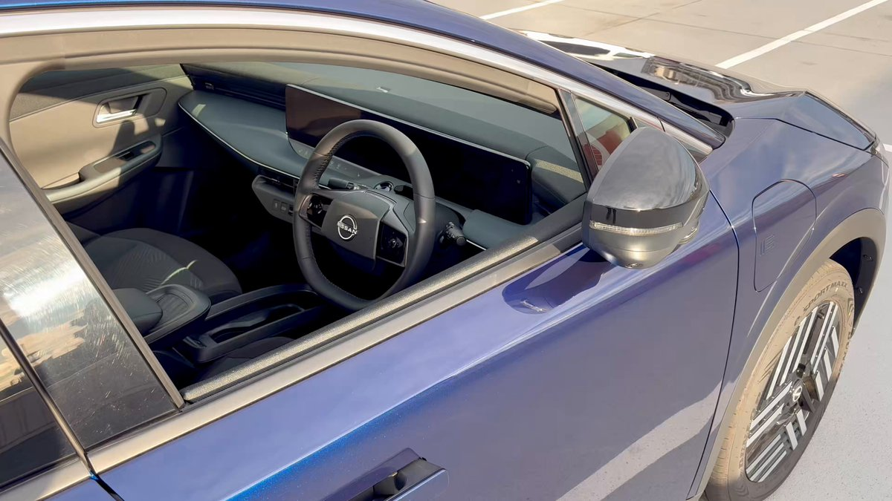
貝さんさんさんがリポスト
/⋰
#上伊那ぼたん、酔へる姿は百合の花
世界出展レポート
\⋱
フランス・パリ
4/27（月）
フランスの地で行う
フランス人のための和酒のコンクール
「Kura Master 2026」（10周年）にて
作品が登場しました！
#kamiinabotan #KuraMaster
Torishima / INTPさんがリポスト
もう中の人ではないけど、このコメントを隠すやつは記事の投稿者ができる操作で運営によるものではないはず
小柳勝範＠札幌のIT会社の代表
@k_koyanagi_null
え、運営が勝手に非表示にするの！？
Torishima / INTPさんがリポスト
【関東以西は夏日当たり前に 対策を】
関東以西は夏日当たり前に 対策を - Yahoo!ニュース
ねくまさんがリポスト
きのう保育園のお友達3人組とママたちでサンリオピューロランドに行き遊び倒しまして、私はいまだ疲れっぱなしのヘロヘロやろうです。体力…
私ももここも初ピューロでした。どこもかしこもかっわいかった
そしてもここのサンリオでの推しがシナモンさんに決定しました！一緒だねｳﾌﾌ
貝さんさんさんがリポスト
ボンズ作画部8期生募集のお知らせ。
RECRUIT｜BONES-株式会社ボンズ
Torishima / INTPさんがリポスト
マネーフォワードでよく分からないのは、 API で「安全に」参照しているはずの銀行系が軒並み止まり、生のパスワードを使ってスクレイピングしている証券系は止まっていないことで、安全マターよりは政治マターで止めている (電子決済等代行事業者協会関連とか) のではと妄想しているけれどどうだろう
テスラさんがリポスト
そろそろ夏服の季節のようです。
#飛騨高山 #氷菓
なるせひろのりさんがリポスト
モデルYL納車された！
黄砂だらけだから即コーティングしたらボンネットに結構な擦り傷あって凹む…
テスラに言ったら「コーティング後ですか…」と怪しい返事
どうなるのか…
#モデルYL
関宮さんがリポスト
熱を加えると宙に浮かぶこの物体。本物です。フェイク動画ではありません！
空気より0.5～10倍軽い機能素材を
工学研究科の上野智永助教が開発しました。
ベンチャーを立ち上げ、次世代モビリティや航空宇宙分野での実用化を目指しています。
#名古屋大学 #ソラマテリアル
Haruhiko Okumuraさんがリポスト
猫と本は、3万冊の本を所有しており、個人図書室についてこう語っています：オマージュ
「買った本をぜんぶ読む必要なんてないと思います。
日本経済新聞 電子版（日経電子版）さんがリポスト
セブンイレブン、「創業感謝祭」で増量キャンペーン 12商品50%以上
セブンイレブン、「創業感謝祭」で増量キャンペーン 12商品50%以上
MICHEE-N（ミッチー・Ｎ）さんがリポスト
皆んなに聞かれますのでお知らせします。
見られなかった方、是非TVerで見られますのでご覧下さい。
失語症と生きる～もう一度マイクの前に～｜報道／ドキュメンタリー｜見逃し無料配信はTVer！人気の動画見放題
AVITAMINOSEさんがリポスト
アメリカでチップは必ず電子決済ではなく現金で渡すべし。金額にもよるけどアメ人サーバー頭悪いから1ドル札を数枚渡しておけば満足する。実際数えないからね。
例えば50ドル分食ったとして、1ドル札5枚とコイン数個渡しておくと大抵満足する。レシートにはcashと記載し、7%~10%までに抑える。
吐谷渾
@tuyuhun001
最近のアメリカのカフェやレストランは、レジの端末でチップ割合を３択で選べるようになってる。
でも標準的とされる15%が最低ランクで、20％、25％と選択式の店が多いから、よほど強気でないと、つい20％を選んでしまう。
この仕組みもチップ高騰につながっている。 x.com/tadkiyokawa/st…
AVITAMINOSEさんがリポスト
／
6月6日（土） 横須賀線 東京～品川駅間は終日運休いたします
＼
6月6日（土）の 横須賀線・総武快速線は
東京駅・品川駅でそれぞれ折り返し運転を行います。
成田エクスプレスは東京～大船・新宿駅間を運休し
東京駅発着として運転いたします。
詳細はリプライをご確認ください。
AVITAMINOSEさんがリポスト
エリカの答えはこれだピ！
満点だッピ？？
#北方領土は日本の領土
北方領土エリオくん
@hoppou_erio
連休中に遊べるゲームだぜ！
『北方領土』からしりとりで最後の文章に繋げてほしいぜ！
北方領土関連のキーワードが多いほど高得点だぜ！
AVITAMINOSEさんがリポスト
炎上覚悟で暴言吐くけど
反ワクとか医療の素人が
ハンタウイルスに一丁前に解説しているのが滑稽でたまらない
医療の素人が考察を出しても無駄です
どうせデマを拡散するんでしょ？
ワクチン陰謀論？
イベルメクチン？
情報操作？
コロナの二の舞？
医療の現場で働いてる私が断言します
日本経済新聞 電子版（日経電子版）さんがリポスト
首都圏の中古マンション、「PER」は32倍 割高感は新築超え
首都圏の中古マンション、「PER」は32倍 割高感は新築超え
AVITAMINOSEさんがリポスト
中国人、10年代後半の米国対中政策変更以降は自国が西側で嫌われてて、特に日本は米の政策変更前から世論調査では世界一中国が嫌いな国であったことをほとんどの人が認知していないため、事実を知ってビビる人が多い
貝さんさんさんがリポスト
╭ ••• ╮
上伊那ぼたん、酔へる姿は百合の花
第4話 線撮素材紹介
╰ ••• ╯
「大丈夫！私にくっついてきて！」
原画：諸冨直也さん
#上伊那ぼたん
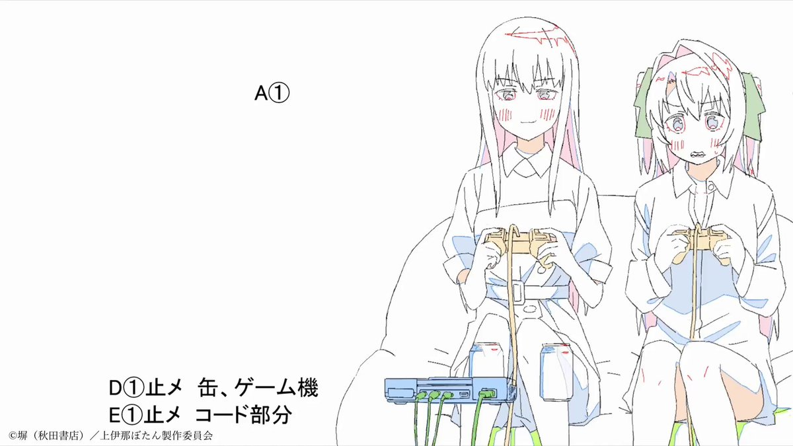
TVアニメ『上伊那ぼたん、酔へる姿は百合の花』
@kamiina_anime
⁺‧┈┈┈
上伊那ぼたん、酔へる姿は百合の花
第4話
┈┈┈‧⁺
「あーっ！体力ない、
チューしましょう！」
各配信サービスでも配信中！
https://
kamiina-botan.com/onair/
#上伊那ぼたん
AVITAMINOSEさんがリポスト
素人回答で恐縮ですが、の絵文字は日本の携帯会社の絵文字を統合したものがベースになっており、の絵文字はもともと「ゴメン」の意味です
とりえ
@trpla226
“pray”なんだよなぁこの絵文字
AVITAMINOSEさんがリポスト
東証続伸、初の6万2000円台 過去最大上昇幅 中東情勢好転に期待感 AI・半導体も追い風
https://
sankei.com/article/202605
07-CDRIX5CPZRNSXFSM2L7OSXKY7M/
…
トランプ米大統領が、イランが「合意を望んでいる」と発言。米国とイランが基本合意に近づきつつあるとも報じられ、投資家心理を明るくした。
連休明け7日の東京株式市場で、日経平均株価（225種）は大幅続伸し、前週末比3320円72銭高の6万2833円84銭で取引を終えた。終値が6万2000円台に乗…
sankei.com
貝さんさんさんがリポスト
スターウォーズQuuuuuuX
「ジャージャー・ビンクスがクソ有能」
Haruhiko Okumuraさんがリポスト
ツイッターから全ツィートをダウンロードし、そこから文字情報が格納されたJsonを探し出す。この段階で140Mバイト
ChatGPTに「このJsonからツィートと日付だけ抜き出してCSVにする方法を教えて」といったらPythonのコードをが出たので実行
Torishima / INTPさんがリポスト
認知負債についての kawasima さんのまとめ､結論が重い
なるせひろのりさんがリポスト
◤◢◤ 配信開始◢◤◢
『HELP/復讐島』
もしも“パワハラ上司”と
無人島で二人きりになったら
あなたはどうする
鬼才 #サムライミ 監督が贈る
全ての働く人に捧げる
予測不能なノンストップ
復讐エンターテインメント
#ディズニープラス スターで
本日（5/7）見放題で独占配信開始
なるせひろのりさんがリポスト
『4Dエフェクト搭載 小型フライングシアター』
限られたスペースでも没入感のある飛行体験を提供できるよう設計
https://
youtu.be/Yz7gDfDAhlY
#FlyingTheater #4D #immersive #experience #amusement #entertainment #DOFRobotics
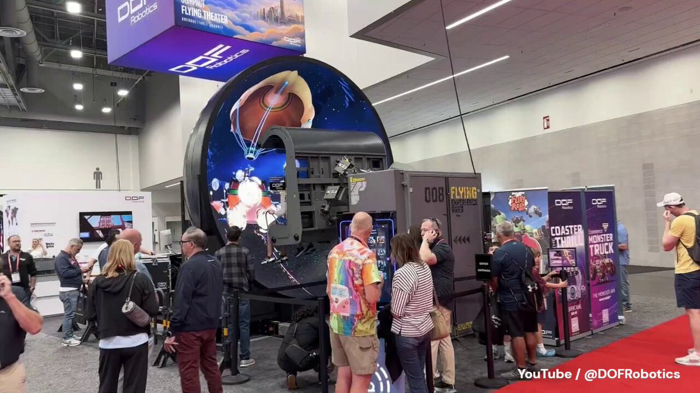
Torishima / INTPさんがリポスト
店員さん曰く、公開初日にお客さんが描き残して行ったものらしくて、嬉しかったから残してるらしい。
優しい……優しいよこの界隈……ッ
コウメン
@komen_siganai
#超かぐや姫
むにさん(@mnilou_)
まっちさん(@Match_168CPK)
と一緒に超パンケーキ！をご査収されに行きました
あとレジ裏にとんでもないブツを見つけてしまったので、店員さんに許可貰って撮らせてもらった
AVITAMINOSEさんがリポスト
「Chrome」が勝手に4GBもダウンロード、オンデバイスAI「Gemini Nano」の是非で紛糾／Googleの中の人が釈明【やじうまの杜】
https://
forest.watch.impress.co.jp/docs/serial/ya
jiuma/2106708.html
…
Torishima / INTPさんがリポスト
#超かぐや姫
むにさん(
@mnilou_
)
まっちさん(
@Match_168CPK
)
と一緒に超パンケーキ！をご査収されに行きました
あとレジ裏にとんでもないブツを見つけてしまったので、店員さんに許可貰って撮らせてもらった
日本経済新聞 電子版（日経電子版）さんがリポスト
住友商事と丸紅、米バークシャー・ハザウェイの持ち株比率10％超す
住友商事と丸紅、米バークシャー・ハザウェイの持ち株比率10%超す
日本経済新聞 電子版（日経電子版）さんがリポスト
「孤独死保険」支払い10年で4倍
https://
nikkei.com/article/DGXZQO
UD1230X0S6A310C2000000/?n_cid=SNSTW005&n_tw=1778116693
…
賃貸住宅で孤独死が発生した際、大家が負担する特殊清掃費や遺品処分代、家賃損失などを補償。
自治体が大家の保険料を肩代わりして、単身高齢者の入居を促す動きも出てきました。
「孤独死保険」支払い10年で4倍 原状回復を補償、自治体肩代わりも
AVITAMINOSEさんがリポスト
ついにモビリーデイズのリーダーが交通系ICカード対応へ！！
この1年間はかなり不便でしたが、結果的にICカードの乗降リーダーが統一され、以前よりかなり使いやすくなりそうです。
地味にWAON対応なのも嬉しいポイント。
https://
hiroden.co.jp/topics/2026/pd
f/0507-release/release.pdf
…
AVITAMINOSEさんがリポスト
＜東北で30℃到達＞
今日7日(木)は全国的に晴れた所が多く、各地で気温が上昇しました。
岩手県一関市では最高気温が30℃に到達して、東北で今年初めての真夏日になっています。
https://
weathernews.jp/news/202605/07
0161/
…
エンドスさんがリポスト
ロキソニンや胃腸薬などを最大約40％値上げへ 第一三共ヘルスケア
なるせひろのりさんがリポスト
【シュタゲ】『シュタインズ・ゲート リブート』発売日が2026年8月20日に決定。グラフィックのリファイン＆ボイスをすべて再収録したリメイク作。OPテーマは『スカイクラッドの観測者』
https://
famitsu.com/article/202605
/74074
…
限定版にはアートブックや15周年記念イベントの模様を収録したライブBD＆DVDなどが同梱
貝さんさんさんがリポスト
.˚⊹／
『#超かぐや姫！』
超☆速報！！！！！
.˚⊹＼
5/1(金)～3(日)
全国週末動員ランキング ６位
11週連続 TOP10みんな、ありがとう！
▽大ヒット上映中！
上映劇場一覧はリプライにて
#CosmicPrincessKaguya
AVITAMINOSEさんがリポスト
【速報】EU、AI悪用の性的画像生成禁止へ
【速報】EU、AI悪用の性的画像生成禁止へ
日本経済新聞 電子版（日経電子版）さんがリポスト
現金給付に回帰論、国民民主党「1人5万円」 消費税減税の代案に
現金給付に回帰論、国民民主党「1人5万円」 消費税減税の代案に
AVITAMINOSEさんがリポスト
謎の奥多摩と青梅表記。まさかね。
Torishima / INTPさんがリポスト
再度連携先との色々な確認をしているのだと思うが、やはりスクレイピング系のフィンテックという(歴史的には綺麗とは言い難い)出自が、信用の観点や仕組み上のコスト負担のバランス等でいまだに尾を引いているように見えるんだよな。この機会に適切に現代化してくれることを祈る
AVITAMINOSEさんがリポスト
2026年秋に新型車両E131系が、中央本線高尾駅～信越本線長野駅に導入されます！！
長野県エリアへの新型車両投入は、E127系以来28年ぶりとなります！
お楽しみに
詳しくは☞
https://
jreast.co.jp/press/2026/nag
ano/20260507_na01.pdf
…
#中央本線 #篠ノ井線 #信越本線 #JR東日本
ポン☆潤々さんがリポスト
ドリフェス！応援広告 掲出のお知らせ
5次元アイドル応援プロジェクト「ドリフェス！R」の10周年を記念し、
駅看板の応援広告を掲出いたします！
：2026年5月7日(木) ～2027年5月頃【1年間！】
：西武新宿線 上井草駅 南口側ホーム
詳細は画像をご確認ください。
#ドリフェス10周年応援広告
Torishima / INTPさんがリポスト
マネーフォワード、とりあえず連携情報の取得を停止するならスクレイピングを主とするサービスとして完全に機能していない状態に等しいから当たり前だが月額料金は返金する必要あるのでは。そして取得データがもし抜けるようなことがあれば経理上問題が出るので流石にそろそろなんとかしてくれないと感
CNET Japan
@cnet_japan
マネーフォワードME、銀行連携の停止続く
https://
japan.cnet.com/article/352471
75/
…
貝さんさんさんがリポスト
最近のNetflixのアニメ事業について、いろいろ聞いてきました。
Netflixアニメ戦略はどう変わったのか？Netflix映画『超かぐや姫！』異例ヒットの裏側と、権利を独占しない「共創」の行方 | Branc（ブラン）-Brand New Creativity-
Netflixアニメ戦略はどう変わったのか？Netflix映画『超かぐや姫！』異例ヒットの裏側と、権利を独占しない「共創」の行方 | Branc（ブラン）-Brand New Creativity-
日本経済新聞 電子版（日経電子版）さんがリポスト
日経平均6万3000円台 キオクシア買い殺到、時価総額「日立超え」
日経平均6万3000円台 キオクシア買い殺到、時価総額「日立超え」
とりしま (Sub I/O)さんがリポスト
AVITAMINOSEさんがリポスト
すごい記事だ。
「必要としている人がいるから。それを売る人も、それを買う人もね」
路地裏のソウルフード 消えぬ「危険な肉」の影：屋台メシの社会学
路地裏のソウルフード 消えぬ「危険な肉」の影：屋台メシの社会学｜with Planet｜朝日新聞
AVITAMINOSEさんがリポスト
リッツカールトンが実験したらそれ目当ての貧乏人しか来なくなったから止めたってだけでしょ。８０年代のザ・シェフで既に説明されてる。
がぶこ
@bugabu_ga
リッツカールトンのパン、18時以降になると半額になってた頃あったんだよね。いつも狙ってホクホクしながら買って帰ってたんだけどある日しこたま買い込んだ私に一言もなく半額売り切りは終わってた。涙をこらえて定価で買って帰って以来リッツ大阪のことは許してない x.com/lmaga_jp/statu…
日本経済新聞 電子版（日経電子版）さんがリポスト
第一三共系、胃腸薬など最大40％値上げ 6月出荷分から
第一三共系、胃腸薬など最大40%値上げ 6月出荷分から
AVITAMINOSEさんがリポスト
国ごとにフレーズを使い分けているな
徳丸 浩さんがリポスト
久しぶりに渋谷行ったら「強力なパスワード」みたいなお店あった
AVITAMINOSEさんがリポスト
アメリカの人がなぜ日本国旗を持って富士山に登っているのかなと思ったら、このアメリカの人、合衆国海兵隊の隊員さんで同盟国の旗を持って富士山に登る伝統があるのを返信欄で知った。なんとも嬉しい日米の交流だなと。ちなみに20年も続いていて驚いた。
Yao Zhang 張堯
@yaozhang02
一名中国人が富士山で中国国旗を振ったら、すぐ隣のアメリカ人が日本の国旗を取り出し、周りの人々が大笑いし、ピンク色のガラスの心が粉々に砕けて逃げ出しました
Torishima / INTPさんがリポスト
これめちゃくちゃ面白い！単にシンボリックな交差点を作るという以上の意味合いがあったんだな。
川崎に存在する「卍型の交差点」の謎を解明した (1/3) :: デイリーポータルZ -
川崎に存在する「卍型の交差点」の謎を解明した 奇妙な形の道路はいつ・だれが・なぜ作ったのか
AVITAMINOSEさんがリポスト
国営ひたち海浜公園方面への延伸を計画している茨城県ひたちなか市の第三セクター、ひたちなか海浜鉄道は南口付近に整備する新駅を高架駅として建設し、駅前に大型バスが乗り入れするロータリーを設ける方針であることが会社などへの取材でわかりました。
ひたちなか海浜鉄道の延伸 海浜公園南口付近の新駅は高架駅に | NHKニュース
AVITAMINOSEさんがリポスト
新聞の購読率下がってチラシの販促効果も減りつつあるけど…
クスリのアオキのチラシ、これ見て行こうと思う人がどのくらいいるの！？
日本経済新聞 電子版（日経電子版）さんがリポスト
アンソロピック、企業価値OpenAI超えへ CEO「1人で10億ドル事業作れる」
アンソロピック企業価値OpenAI超えへ CEO「1人で10億ドル事業作れる」
AVITAMINOSEさんがリポスト
日本基督教団「礼拝と音楽」最終号が「人権揺るがす」と回収 執筆者人選に批判か…異論も
https://
sankei.com/article/202605
07-4GNLXLGMDBGZXAKWXZDVJL4RIM/
…
関係者によると、特定の執筆者の人選について批判が寄せられたという。同誌は教団の出版部門、日本キリスト教団出版局の経営悪化で休刊が決まり、今回が最終号だった。
日本基督教団「礼拝と音楽」最終号が「人権揺るがす」と回収 執筆者人選に批判か…異論も
テスラさんがリポスト
けものフレンズが盛り上がってる所で、みんなたつき監督のケムリクサもまたみようぜ！！
そしてコレは当時勢いで描いたPOP #けものフレンズ #ケムリクサ #たつき監督
のぶさんがリポスト
【大切なお知らせ】
この度、矢場とん 大阪松竹座店は5月26日(火)をもちまして閉店させていただくこととなりました。
10年間、本当にたくさんのお客様にご来店いただき、支えていただきました。心より感謝申し上げます。
閉店まで残りわずかとなりますが、最後まで皆さまを笑顔でお迎えいたします。
AVITAMINOSEさんがリポスト
ついに和製CIAが発足するのか。名前は、National INtelligence of JApan 略してNINJAだといいなあ
Yahoo!ニュース
@YahooNewsTopics
【国家情報局700人規模 今夏発足へ】
https://
news.yahoo.co.jp/pickup/6579097
佐々木俊尚＠新著「人生を救う 名もなき料理」3/11発売！さんがリポスト
東京で財布をなくしました。完全に失くしてしまいました。すべてのカード、現金、すべてが入っていました。パニックになりました。
その日に行ったすべての場所に戻ってみました。何もありませんでした。警察署に行って報告書を提出しましたが、何も期待していませんでした。
海街@信州さんがリポスト
ノーカット放送
#魔女の宅急便
明日よる9時
――おちこんだりもしたけれど、
私はげんきです。――
監督･脚本:#宮﨑駿
原作:#角野栄子
音楽:#久石譲
音楽演出:#高畑勲
声の出演:#高山みなみ #佐久間レイ #信澤三惠子 #戸田恵子 #山口勝平 #加藤治子 #関弘子 #三浦浩一
日本経済新聞 電子版（日経電子版）さんがリポスト
日銀、賃上げ継続なら「躊躇なく利上げを」 3月会合要旨
日銀、賃上げ継続なら「躊躇なく利上げを」 3月会合要旨
AVITAMINOSEさんがリポスト
米国のハイテク（半導体）株高で、日経平均株価が異次元の領域に突入しておりますね・・・
で、必ず話題になるのが「これはバブルなのか？？」という点。
その際、NS倍率（NASDAQ総合指数÷S&P500）が現在の状況を判断するひとつの指標になるかなと。
AVITAMINOSEさんがリポスト
こういう子連れが多いんやろな…ANAのお手並み拝見
とりさんさんがリポスト
Vim 終了代行、始めます
Vim を終了出来なくなってしまった事ありますか？終了方法が分からず無駄な時間を費やしてしまっていませんか？
弊社にお任せ頂ければ、弊社の優秀なスタッフが遠隔で対応。
事前に行うヒアリング内容に応じ、:q, :q!, :qall!, :wq!, :wqall!
なるせひろのりさんがリポスト
ちょっとこれは、同志社国際高校の件と、イロイロと被ってて、でも温度差がありすぎる事例になりそう。
旧メディア側、どうすんの？
続ければ、ダブスタが可視化だし。
急に報道が減ったら、答え合わせだし。
ラッキー7
@lucky_75757
部活遠征のバス事故で高校生が死亡し、運転手の名前を事故が発生した当日から報道するテレビ。
一方、辺野古沖転覆死亡事故からもう7週間以上が経っているが、高校生を死なせた共産党員の船長の名前は未だにテレビで報道されていない。
テレビは都合の悪い情報は報じない。
https://
x.com/846ak/status/2
051966681267024222/video/1
…
AVITAMINOSEさんがリポスト
選挙Twitterなんて悔しがってなさい、彼ら（モデレーター）がCities Skylines 1に選挙を追加したよ
AVITAMINOSEさんがリポスト
天声人語に呆れて言葉も出ません。この「ぢ」は、ヒサヤ大黒堂の看板文字として長年有名なもので痔薬の老舗ブランド。子供の頃から目にしてきた人なら即座にピンと来るはずの文化的な記号です。それを知らない朝日の編集委員が「面白いひらがな」と感心してコラムに書く。いや、知らないならやめた方が
春の風にゆられ、東京・築地の街を歩く。外国人の観光客が多い。背の高い金髪の男性とすれ違うとき、その太い腕の刺青が目に入り、おやっと思った。「ぢ」とある。どういう意味なのだろう。声をかけたが、彼はにこ…
asahi.com
とりさんさんがリポスト
え、これってメインキャラ一体描くごとに感情系のエフェクト（というかボディパーツ）全てドローキックされてるってことか？ 描画プログラマよくオッケー出したな。
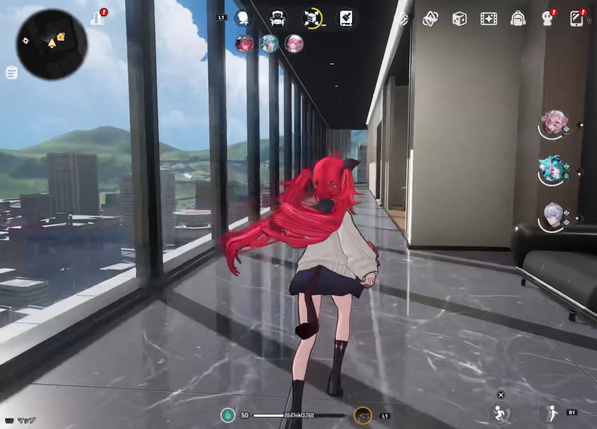
ワタリツグ
@Watari_Tugu
#NTE
ぬふぬふとナナリを眺めてたら頭にぎっしりつまってって一瞬焦った
そしてコレが何なのか気づいてめちゃくちゃ関心した
エンドスさんがリポスト
ナフサ危機 「物がない」現場は悲鳴、政府対応は「場当たり的」
ナフサ危機 「物がない」現場は悲鳴、政府対応は「場当たり的」
AVITAMINOSEさんがリポスト
日韓に世界が注目、防衛協力に地殻変動－超大国は当てにできず
日韓に世界が注目、防衛協力に地殻変動－超大国は当てにできず
AVITAMINOSEさんがリポスト
三村財務官、為替介入に「回数制約するルールないと認識」
三村財務官、為替介入に「回数制約するルールないと認識」
AVITAMINOSEさんがリポスト
「プレイ中の世代」と題された新しいレポートは、ハードコアゲーマーがビデオゲームをどのように購入しているかを調査しています。
主な発見は、これらのハードコアゲーマーの62%がゲームの定価を支払わなくなったことです。
数字は年齢によって異なります。
>14歳から29歳のGen
AVITAMINOSEさんがリポスト
白浜町からパンダ4頭が中国に返還されて約1年。「観光客が減るのでは」と心配されていましたが、町長の大江氏は「数字は嘘をつかない」と言い切っています。観光客数にも売上にも大きな変化はないと。皆が驚いていますが、全く不思議はありません。私も3年前に現地に行って、パンダは見ないで、別の実
MICHEE-N（ミッチー・Ｎ）さんがリポスト
15年前位にある個人経営のバス事業者の社長さんの話しで、バス運行計画に対し見合わない運賃の要求が依頼主からあった場合「危ないと思った仕事は直ぐに断る。こういう時は断る勇気も必要なんだよね。もし何かあったら、本当に会社が潰れるよ」との言葉が印象に残っていますね
事故のバスは「レンタカー」 新潟の会社の営業が手配（共同通信） - Yahoo!ニュース
AVITAMINOSEさんがリポスト
フランスはシングルマザーでも生活に困らないようあらゆる支援策をして出生率を上げた。
アメ
@twinkle_rains
違うよ。女性一人でも安心して育てられる状態にならなきゃ出生率は上がらない。リスク高すぎて産み控えしてるんだから。
フランスはシングルマザーでも生活に困らないようあらゆる支援策をして出生率を上げた。当てにならない男と子育てするより、一人で公的支援を受けながらの方が精神的負担も軽い。 x.com/Lavonda2004789…
AVITAMINOSEさんがリポスト
マドゥロ大統領逮捕からわずか4ヶ月、ベネズエラ石油輸出量が前年比76%急増し、4月は1日123万バレル（2018年末以来最高水準）となり
米国の制裁緩和で合法的なドル建て取引が復活し、中国依存から米・印・欧へ輸出先が劇的にシフトした。
AVITAMINOSEさんがリポスト
ちょい長いですがお読みください
先日秋葉原で、サンボの場所を聞いてきたギャルがいて…
『なんだ…なにかのドッキリか？』と疑いつつも連れてってあげたら、「ここがあの…岡部が牛皿を食べていた」と感動していた。
どうやらシュタゲをアニメで見て来てみたかったとのこと。
AVITAMINOSEさんがリポスト
昔はこの自動販売機、
回数券・切手・テレカ・新幹線チケットでパンパンでした。
でもコロナ禍以降、ペーパーレス化が一気に加速。
JRの回数券も廃止。
「入れる商品が減る」って、地方の金券ショップにはかなり大きかったです。
…で、空いた枠をどうしたか。
尾道は観光地。
貝さんさんさんがリポスト
リップシンクは枚数増えるけど楽しい(´ω｀)そして作監さんが泣く

AVITAMINOSEさんがリポスト
AI擁護でも否定でもないけど
「AI使って余計な仕事は効率化しましょう」の時代に、
「いや、うちの業務はAI一切使いません」ってムーブかましたら効率ガタ落ちになって「何しとんねん」って感じになるので、
要所では絶対に使用しないといけない物になりつつあると思う
Gooser
@NotGooser
今、Twitterを見ているときの気分...
#NTE
とりしま (Sub I/O)さんがリポスト
いろかぐ
AVITAMINOSEさんがリポスト
産経新聞のスクープ。内閣情報調査室が取材に答え、日本政府の情報活動人員を公開。警察、防衛省、公安調査庁、外務省、内調の関係部局合計で約3万3000人。ただ国内の治安対策に人員が偏っている問題が。これまで対外情報は米国に依拠してきたためで、今後は対外情報庁の立ち上げで整備していくことに
AVITAMINOSEさんがリポスト
Slay the Spire 2は、プレイヤーがエンドクレジットでAnita Sarkeesianがコンサルタントとして記載されていることを発見した後、批判に直面している。
AVITAMINOSEさんがリポスト
時間割から「算数」消える？ 「数学」に名称統一案―指導要領改定で議論
https://
jiji.com/jc/article?k=2
026050600413&g=soc
…
統一論が浮上した背景には、「数学は算数より難しい別の教科」という印象を解消し、苦手意識を持つ児童生徒を減らす狙いがあります。
時間割から「算数」消える？ 「数学」に名称統一案―指導要領改定で議論：時事ドットコム
AVITAMINOSEさんがリポスト
オーストラリアは、子宮頸がんを撲滅する世界初の国になる見込みで、これは主にこの疾患を予防するための全国的な予防接種プログラムによるものです。
Could Australia Be the First Country to Eliminate Cervical Cancer? It's on Track, but HPV Vaccina...
AVITAMINOSEさんがリポスト
このとき防災オタクには、こう見えています
藤島新也＠災害担当記者
@shinyahoya
今夜のうめきた公園は気持ち良すぎた。JR大阪駅前なのがすごいよね。
AVITAMINOSEさんがリポスト
小児科医からの切実なお願いです。
これ、決して対岸の火事じゃありません。数年後の日本の姿かもしれないんです。
日本の産科やNICU（新生児集中治療室）も、現場の医師たちの文字通り「自己犠牲」でなんとか首の皮一枚繋がっている状態。
ふらいと@小児科医・新生児科医
@doctor_nw
少子化が進む韓国の周産期医療崩壊の勢いが凄まじい。ここ最近で妊婦受け入れ困難で早産児が相次いで死亡。理由は専門医不足。産科専門医はここ20年間で半減、新生児科医も人気がない。同じく少子化の進む日本の周産期医療も手厚くしないと韓国の後を追うか
https://
news.yahoo.co.jp/articles/acb1b
978fd45c8d996c2c3a86d51288bd69a67b8?source=sns&dv=sp&mid=other&date=20260506&ctg=wor&bt=tw_up
…
AVITAMINOSEさんがリポスト
- ブラジルには、映画館が上映セッションの12%でブラジル映画を上映しなければならないという法律があります。
- Cinemark Brazil は、YouTubeで無料公開されているカートゥーンを、午前11時や正午頃のセッションで、17,000回もノンストップで上映することで、このクォータを達成しています。
Folha de S.Paulo
@folha
シネマークUSA、スクリーン割り当ての制限を突破し、2024年の映画を1日に100回以上上映
https://
www1.folha.uol.com.br/ilustrada/2026
/05/cinemark-usa-brecha-na-cota-de-tela-e-exibe-filme-de-2024-mais-de-cem-vezes-ao-dia.shtml?utm_source=twitter&=social&utm_campaign=twfolha
…
AVITAMINOSEさんがリポスト
東京都シルバーパスは10月からICカードになります！｜東京都
https://
share.google/MJzYsxCNIJfuuv
LWU
…
『車内にIC定期券内容控えだけではバスに乗車出来ない』シルバーパスが2026年10月以降の更新でICカードになるらしい。
バス運転士にはメリット多い。老人はいつもチラッと見せて通過してるから。
テスラさんがリポスト
Nikonを使う理由の1つが、ストロボのTTL調光性能に優れているから。報道記者にNikon使いが多いのもこれが要因だと思われます。しかも高性能で発光色がきれいなProfotoがNikonのi-TTLに正式対応したことで、撮影の幅が大きく広がりました。ピーカンの日や、逆にどんよりしていてコントラストがほしい時
エンドスさんがリポスト
ロックの歴史今日
2024年5月7日
スティーヴ・アルビニ（ミュージシャン、オーディオエンジニア）がシカゴで心臓発作を起こし、61歳で亡くなりました。彼はアンダーグラウンドおよびオルタナティブ・ロック音楽に深い影響を与えた遺産を残しました。彼はNirvanaの『In Utero』、Pixiesの『Surfer
AVITAMINOSEさんがリポスト
Z世代とエンターテイメント消費に関する新たな統計、IGN Entertainmentによる調査によると：
• Z世代ユーザーの59%が、1つの作品を見るためだけにストリーミングサービスに積極的に登録し、その後すぐに解約しています。
• 62%がビデオゲームの定価を支払いません。
•
AVITAMINOSEさんがリポスト
Linux Kernelドライバとしてntsyncを実装したと。WineがどんどんNative化していく。 >
【検証】Wine 11「678%高速化」の真相。30年越しの新技術ntsyncがLinuxカーネルに正式採用された
【検証】Wine 11「678%高速化」の真相。新技術ntsyncがLinux正式採用
AVITAMINOSEさんがリポスト
セブンイレブンが時代を50年戻してるんだが…。
AVITAMINOSEさんがリポスト
日本の友人たち、私たちの海兵隊はもうあなたの敵ではありません。彼らはあなたの友人です。アメリカは日本を愛しています。
AVITAMINOSEさんがリポスト
指定席トラブルが話題だけど
品川駅で停車中の常磐線普通列車のグリーン車でそこわたしの席なんですけどと子連れの女性に言われたことがある
え？このグリーン車は指定席とかないですけどと言ってチケットを見せて貰ったら特急ときわと間違えていて号車と座席番号だけ普通グリーン車の席と一致していた
貝さんさんさんがリポスト
アニメ、インドは「キャラ重視」 インドネシアとサウジは物語
アニメ、インドは「キャラ重視」 インドネシアとサウジは物語
AVITAMINOSEさんがリポスト
タイのコウモリから新型コロナの近縁種見つける 東大医科研など
タイのコウモリから新型コロナの近縁種見つける 東大医科研など
AVITAMINOSEさんがリポスト
渋谷のトイレ、意訳が京大レベルすぎる
AVITAMINOSEさんがリポスト
自民党批判なんてちっとも「反体制」じゃないよ、音楽村では（少しだけ知ってる）。むしろ「体制」。同調しないとハブられる。
ふぇむ(せかんど！)さんがリポスト
GWなので金ビキニ…ならぬ金バニーです！
黒ギャル金バニーvs白セイソ金逆バニー
AVITAMINOSEさんがリポスト
1人だけ超発熱してるのか、もしくは周りのやつらが人間ではないか
サーマルの特性を知ってる人ならゾッとする画像
Nui
@Nui1Yo51Yo
恐怖を感じた
AVITAMINOSEさんがリポスト
この大型連休に人々はどこへ向かっていたのか、国交省の交通量オープンデータから視覚化しました。今日までのGW期間の全国平均交通量は通常期比で約23%の増加です。最も増加率が高かったのは北海道で、GW期間平均で通常の約1.3倍となっています。道東の知床方面（斜里町）では約3.9倍、上富良野や
AVITAMINOSEさんがリポスト
これ批判してる人、1度維新の演説現場（できれば重役）聞きに行って欲しい。
本当にしばき隊がうるさくて何も聞こえない。
読売新聞オンライン
@Yomiuri_Online
選挙の街頭演説を「大声」などで妨害、維新が法規制を議論へ…「表現の自由」との関係整理し検討
https://
yomiuri.co.jp/politics/20260
506-GYT1T00092/
…
#政治
とりしま (Sub I/O)さんがリポスト
#超かぐや姫
AVITAMINOSEさんがリポスト
単に外国人として日本社会の面倒なコードから一時的に外れているだけで、その解放感を「中国は日本より自由」と言ってしまうのは錯覚みたいたもんだな。たぶん韓国でもアイルランドでも感じられる種の自由だろう。
今西きんじ
@kinnjiimanishi
中国初心者のバカに限って
「中国は日本より自由」とか言い出すの何なんだろうね。
だいたい住んでも働いてもいない旅行者がちょっと見ただけで何がわかる？馬鹿なの？
AVITAMINOSEさんがリポスト
もっと怖いこと言うと
そいつ公共の場に萌え絵を出すな
キモいからって言ってるやつやぞ
曖昧なプラスチックの日記
@A7sgDwj5d28k4m9
と思ったら、43歳のいい歳したおばさん(大学教員)が「パブでぬいぐるみ出せないのはおかしい！お行儀なんてクソ喰らえ！」とほざいてるだけのホラー画像しか見つからなかった。なにこれ？(店がやめろって言ったらやめろや。私有地やぞ) x.com/a7sgdwj5d28k4m…
Torishima / INTPさんがリポスト
GPT-5.5世代の計算コスト、改めて確認したら滅茶苦茶高くてびっくりした。基本的に5.4世代の倍額。性能に対して計算量が爆発的に増えていくのなら、これは持続不可能な成長に思えるし、最近のトークン経済の進行度を踏まえると支配と搾取の構造が着実に構築されていっていないか？と疑念が頭をよぎる
AVITAMINOSEさんがリポスト
楽しかったのは事実だけど、それはそれとして展示が一辺倒だなぁと言う印象もどうしてもあった
多くは
- AI画像、AI動画系
- vibe codingゲーム
- LLM組み込みロボット
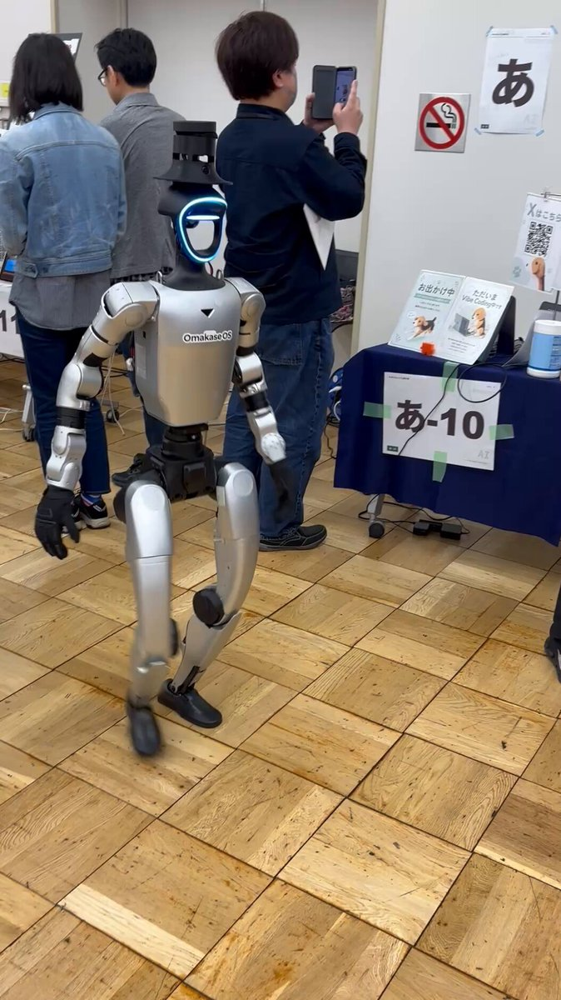
坂すたじお/sakastudio - moorestech
@sakastudio_
生成AIなんでも展示会行ってきた！
想像以上に盛り上がってたし、unitreeいたし、ぬこぬこさん @nukonuko にも挨拶できて結構楽しかった
Torishima / INTPさんがリポスト
ゴールデンウィーク開始
↓
グエー ←←←これ何？
↓
ゴールデンウィーク終了
ポン☆潤々さんがリポスト
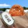
昨日つけていたつけまを机の上に放置していたら、埼玉のギャルが爆誕していた。
AVITAMINOSEさんがリポスト
佐藤氏のコメントは関係者の考え方を確認するうえで興味深い。一部報道では、4月上旬に日本側が日露外相会談を打診したとされているが、佐藤氏は「日ロの外務省ルートでは一向に関係が改善しないので、クレムリンが鈴木氏を通じて対日関係改善の意志を伝えてきた」と、露側の意思を（も）示唆。動こう
朝日新聞コメントプラスニュースを読み解く視点をプラス！
@asahi_comment
【コメント5件】作家・元外務省主任分析官の佐藤優さん、北海道大学教授の服部倫卓さんらの投稿が集まり、読まれています。
鈴木宗男氏が訪ロ、外務次官らと会談 「ロシアは外相会談に前向き」
https://
asahi.com/articles/ASV54
5RM4V54UHBI01KM.html?ref=tw_comment#expertsComments
…
AVITAMINOSEさんがリポスト
これとんでもない別解載ってて笑った
浪漫仮面
@Ro_mankamen
【理系の末路】
「よし、x^(1/x)を微分だな」
AVITAMINOSEさんがリポスト
英インディーズバンドが北米ツアーを行うと収支は？ ロス・キャンぺシーノス！は収入と支出の内訳をすべて公開。全公演はほぼ完売だったが全体で約45万円の赤字。そこにグッズ販売の利益を加えて黒字に。その利益も次ツアーの資金に充てるのでメンバーの収入はなし
英インディーズバンドが北米ツアーを行うと収支は？ ロス・キャンぺシーノス！は収入と支出の内訳をすべて公開 - amass
AVITAMINOSEさんがリポスト
日本は二重国籍を認めていないので、この連休で安易に群馬パスポートを取得した人たちは自動的に日本国籍を喪失している
Yahoo!ニュース
@YahooNewsTopics
【群馬パスポート求め 県庁に2千人】
https://
news.yahoo.co.jp/pickup/6579008
AVITAMINOSEさんがリポスト
これよりすごい変化をした画像出せた人優勝
フルフル
@tokotoko4000
これよりすごい変化をした画像出せた人優勝
AVITAMINOSEさんがリポスト
富士市立博物館って「趣味人しか来館しないガラガラの格安施設」で、2016年に富士山かぐや姫ミュージアムとしてリニューアルしてからもパッとしなかった。それが超かぐや姫きっかけで多くの人が来てくれるし褒めてくれるしで感謝感激雨アラモード。
#富士市 #富士山かぐや姫ミュージアム
#超かぐや姫
RCTN
@arcnrctn
スタンプラリーの施設でもある富士市かぐや姫ミュージアム、入場無料なのに富士市とかぐや姫の関係だけじゃなく富士市の歴史や民俗など展示内容がボリューミーすぎ…
もはや有料級ですよこれ…
この博物館と出会うために超かぐや姫！スタンプラリー参加する意義がある。 x.com/arcnrctn/statu…
AVITAMINOSEさんがリポスト
ANA5/19〜新料金
重要
知らないと大変かも
航空券は順番通りに使わないと無効になります！
これまでと大きく変わる点です。
例えば、往復のセットで購入していたとします。
① 6月1日 HND →ITM行
② 6月3日 ITM→HND行
AVITAMINOSEさんがリポスト
日本が貧乏になり英国留学できなくなると分校が増えるという話はあったがこれは新しい…
AVITAMINOSEさんがリポスト
月間搭乗率99.9%はエバーの福岡〜台北バケモノで草。
エバーは3月は32席しか空席がなかったそう。(ほぼ直前キャンセルだろ)
それでもって競合他社もほぼ満席。
AVITAMINOSEさんがリポスト
異変すぎる標識あった
引き返します
AVITAMINOSEさんがリポスト
オタクの住みにくい日本ネタに超マジレスすると、私は本当にオタクがガチで迫害されてた時代(宮崎事件とか報道具合とか幕張メッセ締め出しとか)見ちゃった世代なので2005年とか全然アリっすね。電車男とかでオタクムーブ来てたし。
2020年代正直天国すぎてやばい。地球じゃないみたい。別の星。
AVITAMINOSEさんがリポスト
韓国 KOSPI「とんでもない上昇率」連日最高値
2025年 +75.6%
（日経平均 +26%、ナスダック 約+20%）
2026年 +75.2%
（日経平均 +18%、ナスダック +9%）
けん引役はAI・メモリー株
・サムスン電子 14%高
・SKハイニックス 10%高
（前日+12%で、さらに+10%って…）
AVITAMINOSEさんがリポスト
2005年、デンマークはDNSを通じてウェブサイトをブロックし始めました。
公式には、子どもたちを性的虐待素材から守るためです。
翌年、音楽業界が準備万端でした。
同じツール。
新しい理由付け。
今度は突然、海賊版、著作権、そして時代に追いついていない産業の話になりました。
なるせひろのりさんがリポスト
https://
x.com/i/status/14764
97169620541442
…
こっちのがイカれてる…
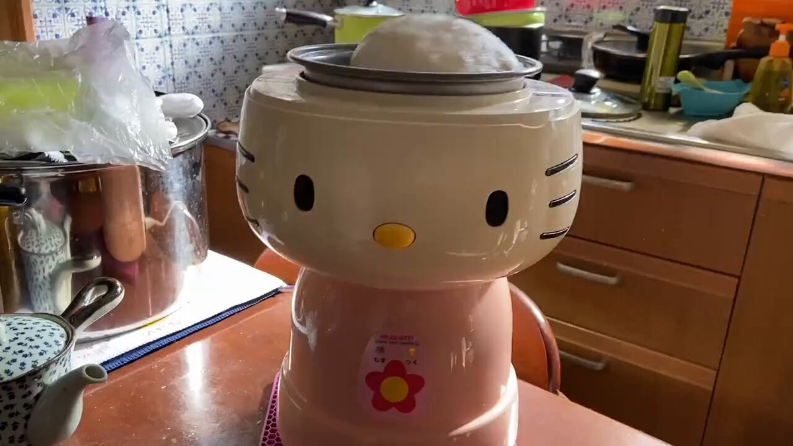
チアット@アートメディア
@cheerforart
不規則なパターンで、未知なる生命体のようにぶよんぶよんと一斉に踊り出す白い球体。イギリスのロンドンを拠点とするアーティスト、ハリソン・ピアース氏に動的インスタレーション作品。
AVITAMINOSEさんがリポスト
ほんとだ＞中学入試にKnuthの↑
日本巨大数協会(JGA)
@Googology_Japan
洛南高等学校附属中学校の入試問題に、クヌースの矢印表記が出題されたようです
https://
nokai.jp/kinki/exam-ans
wers
…
AVITAMINOSEさんがリポスト
現政権になってから、党や議員のアピールだけでなく『政策』や『成果』についての報告をTwitterで見ることがかなり増えたと思う。
一次情報をリアルタイムで、どこよりも速く正確に知ることが出来るのは大きい。
AVITAMINOSEさんがリポスト
地元民は、名古屋空港が小牧基地なのを知ってるので
あなたみたいなのに騙されないんですよ
そこ、小牧基地です
県営名古屋空港と小牧基地は滑走路を共有してるなんて、誰でも知ってる事
マジでふざけんなよ
あいち航空ミュージアムにも零戦あるだろうが
もう共産党なくなれほんと
もとむら伸子(本村伸子）
@motomura_nobuko
「全国８９空港のうち２１空港で米軍機の着陸があり、空港別では、熊本に次いで奄美（鹿児島県）が４８回、福岡と名古屋が４３回、新石垣（沖縄県石垣市）が２３回」
2025年、名古屋にも４３回も着陸していることが明らかになりました。
AVITAMINOSEさんがリポスト
初めて東北新幹線の通過見たけど怖すぎ
AVITAMINOSEさんがリポスト
秋葉原、3路線全てが「電車線」なので、どの路線も5分程度で次が来てしまい、乗降客数の割に乗換客の滞留時間が短いんだろうな。反対に、タイミングが悪いと15〜20分待ちになるような駅だと、乗降客数の割に駅ナカが繁盛していたりする。西船橋とか、蘇我とか、拝島とか…。(どれもDilaだな)
秋葉原PLUS（＋）
@akiba_plus
JRの秋葉原駅は「ターミナル駅なので駅構内で消費させたい」という思惑と
利用者の秋葉原駅は「観光地(目的地)なので1秒でも早く駅構外に出たい」という思惑が一致しない
のでまだまだテナントの混乱は続きそう（和） x.com/calcijp/status…
AVITAMINOSEさんがリポスト
「サカナクションが憲法改正音頭をリリースしたら、どーせメチャクチャ叩くだろ。政治的発言をして欲しいんじゃなく、左寄り発言をして欲しいだけ」
という投稿を見たのだが、この投稿の内容以前にサカナクションの憲法改正音頭は聴いてみたい気がする
AVITAMINOSEさんがリポスト
ライブは高いからなぁ。
バンド使うなら
・出演料10万x4＝40万
・リハ5万x4x3回＝60万
・技術周り3万x2名＝6万
・スタジオ代＝20万
・楽器搬入10万x3回＝30万
・会場費＝200万
・技術・演出＝300万
・運営スタッフ＝200万
Chiro@公式
@sr_chiro_Tr
声優アーティストといわれる人達で、有名声優であっても歌手活動を休止する人がでてきているのは、結局その領域では赤字にしかならないからで今や1万人規模の会場が埋まるのは水樹奈々と水瀬いのりくらいしかいない。2000人とかのレベルでは、おそらく単体のイベントとしては赤字にしかならんのでは
AVITAMINOSEさんがリポスト
日本からGAFAMもサムスンも生まれないが、トヨタとホンダとソニーと任天堂が生まれたのは無視出来ないと思うけどな...
Shen
@shenmacro
「どうして日本からGAFAMから生まれないのか」から「どうして日本からサムスンも生まれないのか」の時代へ。 x.com/willyoes/statu…
AVITAMINOSEさんがリポスト
いやあんたら共産党、水着撮影会を性の商品化とか言う一般論で批判したあげく、中止まで求めたやん。どの口で言うとんねん。
永井ともひろ日本共産党 此花市政対策委員長生活相談お気軽に(此花区外・大阪市外も)
@TomohiroNagai91
これは本当に大事です。
政治家が「公序良俗」等一般論で国民の権利を攻撃したり、行政が個別の良い悪いを仕切り始めたら国民主権・民主主義でなくなります。 x.com/Hassy0924/stat…
AVITAMINOSEさんがリポスト
【会談】赤沢経産相がサウジアラビアとUAEを訪問 原油安定供給に向け協力確認
https://
news.livedoor.com/article/detail
/31189114/
…
UAEでは、原油の安定供給や、既存の共同備蓄800万バレルの迅速な補充、共同備蓄の増強など、五つの提案を行ったという。「原油補充を迅速に実施、さらに追加拡大するとの約束を得た」と強調した。
AVITAMINOSEさんがリポスト
自民党が2009年に大敗した時、正直もうダメかもと思っていたのだけど(それぐらいの民主党大勝ちだった) その後の総員あげての地味ーな地元周りと反省の行動はかなりびっくりした。あの時敗走の軍を指揮する貧乏くじを引いたのに頑張っていたのは谷垣さん。
あれが、民主党には出来なかったのだ。
AVITAMINOSEさんがリポスト
台湾高速鉄道（THSR）で4月5日、23歳の大学生の林容疑者がTETRA（Trans-European Trunked Radio）通信システムを不正利用し、列車4本を緊急停止させたとして逮捕された。列車は最大48分遅延し、利用者に大きな影響が出た。
林容疑者はオンラインで購入したSDR（Software Defined
Student hacked Taiwan high-speed rail to trigger emergency brakes
AVITAMINOSEさんがリポスト
＞あるVR空間を興味本位でのぞいてみたのです。美少女キャラの服装をしたアバターたちが、キャッキャとお姫様だっこをし合ってはしゃいでいました。
＞会話から聞こえてきたのは、中年男性と思われる野太い声。見てはいけないものを見てしまった気持ちになりました。
わろた
朝日新聞(asahi shimbun）
@asahi
男性同士の「お姫様だっこ」に着想 新時代のコミュニケーションの形
https://
asahi.com/articles/ASV4Z
1VP4V4ZPIHB011M.html?ref=tw_asahi
…
AVITAMINOSEさんがリポスト
正直、アメリカ海軍の新型艦開発がどうのよりも先に、英国海軍が自壊して日本に建造依頼してきそうなんだよなーって思ってる。
今の英海軍が運用展開可能なのが、
空母2隻、駆逐艦2隻、フリゲート2隻、潜水艦1隻が全戦力ってのはね……。
そらトランプ大統領も端から宛にせんよ。
Britsky
@TBrit90
Royal Navy major combatants status. x.com/NavyLookout/st…
Torishima / INTPさんがリポスト
『レプリカだって、恋をする。』5話みた レプリカでも確かに人生を生きてる実感を得るシーンで出てくるキメのセリフが手持ち資金の減少という一見して卑近な話題（でもこれでかけがえのない思い出を得ている）で、敢えて泣かさずシュールにするところに確かな人生の味があって、今までで一番良かった
なるせひろのりさんがリポスト
今回エロ漫画描くの久々で楽しくて加減が分からず、ここぞってページでかなりエグい顔を描いてしまいまして。歯茎。歯茎のある口描くの楽しいんだよな…。
ナニとは言わないけどナニかの邪魔になってないか心配ですがどうですかね…。
AVITAMINOSEさんがリポスト
こうやって箇条書きにすると眩暈がする民主党政権の失敗。何よりこれらの失策を全部丸投げした上に反省もなく、党名を変えてすっとぼけやがったの時のことはよく覚えている。
「一度やらせてみてください」が危険だという経験則がある理由がよくわかりました。
新田 龍
@nittaryo
まともな日本人が政権交代に全く期待をしなくなったのは、2009年から3年間の「悪夢の民主党政権」を経験したからです。 x.com/mainichi/statu…
AVITAMINOSEさんがリポスト
ダージリンヒマラヤ鉄道！江ノ電みたいなノリで唐突にSLが現れる
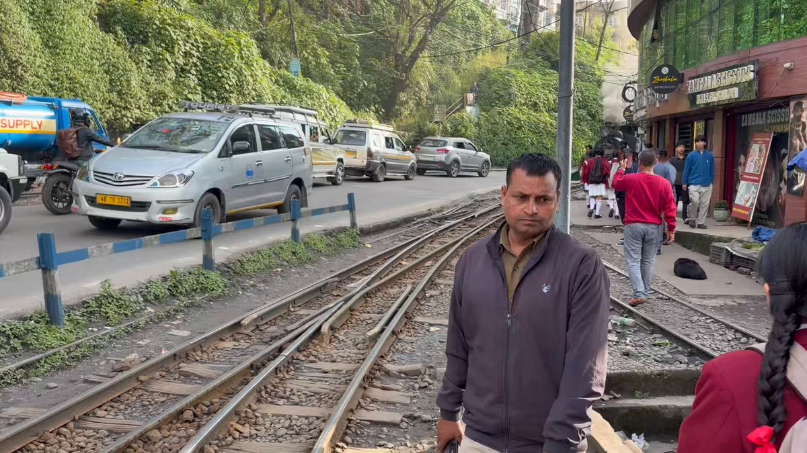
AVITAMINOSEさんがリポスト
少し前まで鴻海精密工業（Foxconn）はiPhoneの組み立てメーカーというイメージだったと思う。高品質なiPhoneを年間2億台以上も作るのは凄い技術とロジスティクス能力なのだが、今やそれよりAIサーバー組み立て事業の方が大きい。2026年1Qの売上10.6兆円という規模より事業転換のスピード感が凄い。
Dan Nystedt
@dnystedt
Foxconn、AIサーバーおよびiPhone組立大手のFoxconnは、AI製品の前倒し需要と主要部品の出荷増加を背景に、4月の売上高が前年比29.7%増の8312億台湾ドル（263億米ドル）に達したと発表しました。1～4月累計売上高は29.7%増の2兆9600億台湾ドルとなりました。Foxconnは、第2四半期の業績は伝統的な閑散
AVITAMINOSEさんがリポスト
写真撮影不可なのものだと国宝だけでも
・日本書紀
・東寺百合文書
・曜変天目茶碗（日本に3点しかない）
・秘府略（全1000巻のうち2巻しか現存していない）
・類聚国史
・北山抄
・水左記
という錚々たる顔ぶれで、たった1000円強で観ていいのかと戸惑うレベル
SPQR
@SPQRPaxRomana
東京国立博物館の『百万石！加賀前田家』展に行ってきたが、なぜここにあるのかと目を疑いたくなるレベルのコレクションだらけだった
写真撮影可のものでも
・ルイ14世の書簡
・ナイチンゲールの書簡
・コナン・ドイルの書簡
・帝政ローマの金貨（アウグストゥス帝時代？）
軍手 #軍手のシン・ガザツ旅 公開中!!さんがリポスト
SFCの制度変更で決済金額を設けた結果は、ハイソな客が集まるのではなく、転売等で決済だけ積んで乗る質の悪い客が集まるだけだと思いますよ
貝さんさんさんがリポスト
大きな話じゃなくて、
でも何かしら世間から求められる
バイアスに男の子も女の子も
ほんのちょっとの違和感やささくれを持ってることって
あると思う。
さやかさんに好感をもって、
自分の好きなものを認めることができて、
最後に「大好き。」って
言う拓斗くんの声もすごく良かった。
貝さんさんさんがリポスト
淡島百景の4話、
原作大好きの私としては
お話も好きで、
とくに拓人くんの
「女になりたいわけじゃない。男でいることが後ろめたかっただけ」っていう、
こういう気持ちをすくい上げることができるのが
志村貴子さんの漫画のすごいところだと思います。
ジェンダーがどうしたこうしたとかそういう→
貝さんさんさんがリポスト
ラッシュチェックでの
リテイク出しなども、
とてもデリケートで、
スタッフの皆さんの
神経がゆき届いているとおもいました。
それがおそらく画面にも現れているのではないかと思います。
今後の話数もぜひ楽しみにしていてくださいね。
貝さんさんさんがリポスト
制作上の大体のトラブルというのは
問題のあるカットを
見て見ぬふりして
次の工程、次の工程へと
送り続けることで
起こりますが、
淡島百景の体制は
今ある問題は全て潰してから
次の工程へと送り届けるという
とても健康な現場で、
なんというか
私はとても癒されました。
貝さんさんさんがリポスト
淡島百景で4話の作監を半パートやらせていただきました。
原画の方がたが
うまかったです。
さすがなのです。
いしづかあつこさんの
コンテ演出が素晴らしく
またチャレンジングなカットなどは任せてもらえたりして
大変楽しかったです。
動画検査の方のお仕事も
素晴らしく繊細で感動でした。
貝さんさんさんがリポスト
今夜もご視聴ありがとうございました。今回はほっこり穏やか3本立ての回です(前回との温度差が凄い)。単行本のおまけ漫画までアニメにしていただけるとは思ってなくてビックリしました色んな側面の淡島を引き続きお楽しみください…！
#淡島百景
貝さんさんさんがリポスト
4話ご視聴ありがとうございました‼︎
今回は明るい話でとても好きな話数です。
演出と作監が優秀だととても良い物が出来る好例の1本だと思います。
次回はいよいよ誰もまだ見た事が無い話数！
しかもグロス回、どうなるか乞うご期待‼︎
貝さんさんさんがリポスト
ED後のおまけは原作の番外編。原画担当者は「グローバル・アニメ・チャレンジ」に選出された将来有望な人らしい…上手い。
貝さんさんさんがリポスト
拓人くんシーンの作監は針場さん。
きっちり良い絵を上げてくれました。
ただ原作の独特な白目無し風は、白目あるアニメは再現が難しく少し違うだけで別キャラに。
やはり自分にしか描けなかった様。一番描いてるので当然なのだが…
拓人くんは凄く良いキャラで1話限りは勿体ない。拓人百景ないかな…
貝さんさんさんがリポスト
進行の読みでスケジュールはタイトに。結局、時間はあったので全編西田さんに作監お願いしたかったが叶わず心残りに。そんなでも3話より先に終了。
貝さんさんさんがリポスト
西田さん作監パートは冒頭からCMまで(一部やってない所あり)。基本的に原作絵遵守なので総作監修正しますが、素晴らしい絵だと原作と多少違ってもそのまま素通しに、西田さんは所々であり唸りました。流石でした‼︎
貝さんさんさんがリポスト
いつも通り数分後スタート！
まだキャララフがあるので上げます。
今回はイシヅカコンテ演出！西田さん針場さん作監！
原画、作監とも優秀でとても楽しめ良い話が出来たと思います‼︎
Buzz@本年もよろしくお願いしますさんがリポスト
【告知・祝商業誌化!】
脱稿したああ!!!!
謎多きナウルなど、玉砕と孤立の島に残る野ざらしの艦載砲・陸戦車両を史実と共に解説！
知られざる島国の現在と課題から日本と世界の深い関わりも紹介！
同人誌3冊+αを全部作り直すくらい時間かけて再編集。
ほぼ全ての人が一生行かない国だけど見てッ！
MC☆あくしず＆ミリクラ編集部
@mc_axis
ナウル、タラワ（キリバス）、ポナペ（ミクロネシア連邦）といった太平洋の島々に残されている、日本陸海軍の戦跡を辿る本『艦砲と戦車の島』が近日刊行となります！
これらの島々には太平洋戦争時までに配備された砲や戦車などが、今も多数残されています。
【クランキー新CM】
Diggy-MO'風ヒト型ロボ a.k.a. 安全ディギー
feat. SoulJa

お口の恋人 ロッテ／LOTTE【公式】
@lotte_koibito
【クランキー新CM】
４人目ヒント：
平成で最もそばにいてくれた
あのアーティスト
#クランキー
ねくまさんがリポスト
❖──────────❖
⠀TVアニメ『#日本三國』
⠀ノンクレジットOP公開
❖──────────❖
♪ キタニタツヤ「火種」
■2026年4月6日(月)
21:00より U-NEXTにて地上波先行配信開始
24:00よりTOKYO MX・ＢＳ日テレほか各局にて放送開始
■配信
Prime Videoにて配信中
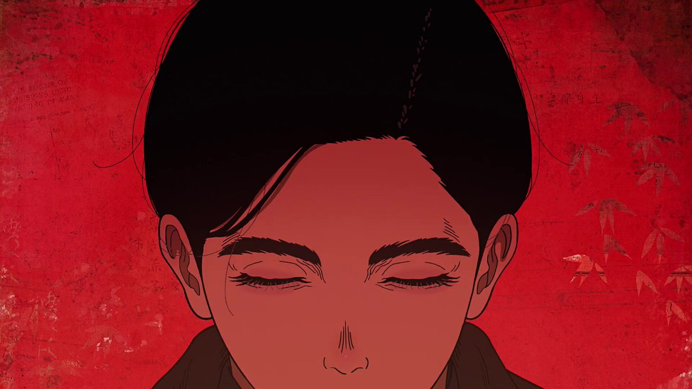